Asynchronicity, Barriers & the mbarrier Pipeline¶
Lesson 3 Companion Guide — Programming the H100¶
Verified on: CUDA 12.x + Hopper GPU (sm_90a). Compile CUDA examples with:
nvcc -std=c++17 -arch=sm_90a -O2 <file>.cu -o <out>Run with:./<out>on any H100 or B200 instance.
What this covers: Everything from Lesson 3 — the philosophy of asynchronicity and latency hiding, blocking vs non-blocking operations, the Generic vs Async proxy memory model, read-after-write and write-after-read hazards, memory fences (acquire/release/cross-proxy), the mbarrier primitive (init, arrive, expect_tx, try_wait, test_wait, arrive_drop), barrier reuse with phase flipping, WAR hazard prevention, barrier.cluster for cross-block synchronization, cp.async.bulk commit/wait groups, and named barriers. Each section includes ASCII diagrams, manual worked examples with concrete numbers, and compileable code with full test harnesses.
How to read this chapter. Chapter 1 said the H100 hides memory latency by letting the TMA fetch data in the background. This chapter is about the bill that arrives with that gift: once a copy happens behind your back, you need a way to know when it has finished — and a way to stop the compiler and the hardware from helpfully reordering things around it.
The chapter comes in four movements. Sections 1–4 build the case for asynchrony
from first principles, with no PTX at all. Sections 5–7 introduce the memory
model you need before you can reason about it: proxies, hazards, and fences.
Sections 8–13 are the core — mbarrier, the Hopper primitive that every
production pipeline is built on, taken apart instruction by instruction.
Sections 14–16 cover three related primitives you'll meet in real kernels.
If you are impatient, read §5–§7 and then §8–§9. Those four sections contain the mental model; the rest is detail you can look up.
★ BEFORE YOU START — Hardware, Setup & Installation¶
A short preamble on where to run the examples. The mbarrier and
cp.async.bulk instructions in this chapter were introduced with Hopper, so
unlike the earlier chapters there is no meaningful A100 fallback — you need an
H100 (sm_90a) or a B200. If you already have one and a working nvcc, skip
ahead to the Table of Contents.
What Hardware Can You Use?¶
This guide targets NVIDIA Hopper GPUs (sm_90a). The mbarrier and cp.async.bulk instructions covered here are Hopper-introduced features. Here is a summary of what works where:
Hardware Compatibility Matrix
══════════════════════════════════════════════════════════════════════
Architecture Chip SM Target Example GPUs Sections
─────────────────────────────────────────────────────────────────────
Ampere GA100 sm_80 A100 (AWS p4d, Lambda) §1-3 only (no mbarrier)
Hopper GH100 sm_90a H100 (AWS p5, Lambda) ALL sections ★
Blackwell GB100 sm_100a B100/B200 ALL + new instructions
KEY:
mbarrier, cp.async.bulk, wgmma → Hopper (sm_90a) or Blackwell (sm_100a) ONLY
cp.async (non-bulk) → Ampere (sm_80) and later
bar.sync / __syncthreads → All architectures
AMPERE NOTE: A100 has cp.async (tile-based async copies) but NOT
cp.async.bulk (TMA) or mbarrier. The conceptual sections (§1-4) apply
everywhere. The code sections (§5+) require sm_90a or sm_100a.
Cloud GPU Rental — Lambda Labs¶
Usually the cheapest way to get an hour on an H100 without a corporate account.
Lambda Labs Setup (H100)
══════════════════════════════════════════════════════════════════════
1. https://lambdalabs.com/ → sign up → Launch Instance
2. Choose "1x H100 PCIe" (cheapest) or "8x H100 SXM5"
3. SSH in: ssh -i ~/.ssh/your_key ubuntu@<INSTANCE_IP>
4. Verify CUDA:
nvcc --version # should show 12.x
nvidia-smi # should show H100, CUDA 12.x
5. If CUDA missing:
wget https://developer.download.nvidia.com/compute/cuda/repos/\
ubuntu2204/x86_64/cuda-keyring_1.1-1_all.deb
sudo dpkg -i cuda-keyring_1.1-1_all.deb
sudo apt-get update && sudo apt-get -y install cuda-toolkit-12-4
export PATH=/usr/local/cuda/bin:$PATH
6. Quick compile test:
nvcc -std=c++17 -arch=sm_90a -O2 ex01_async_basics.cu -o ex01
./ex01
Cloud GPU Rental — AWS¶
The alternative if you already have AWS set up. Note that p5 is the H100
family; p4d is A100 and will not run this chapter's examples.
AWS p5 Setup (H100)
══════════════════════════════════════════════════════════════════════
Instance: p5.48xlarge (8× H100 SXM5) or p4d.24xlarge (8× A100)
AMI: "Deep Learning AMI GPU PyTorch" (Ubuntu 22.04) — CUDA pre-installed
ssh -i key.pem ubuntu@<PUBLIC_IP>
source activate pytorch # activates CUDA environment
nvcc --version && nvidia-smi # verify
For A100 (p4d): use -arch=sm_80, skip mbarrier/cp.async.bulk sections.
For H100 (p5): use -arch=sm_90a, all sections work.
Hopper vs Blackwell — What Changes for This Lesson¶
Read this once if you are on a B100 or B200. The short answer is that everything
in this chapter carries over unchanged — mbarrier is not going anywhere — and
only the compile flag differs.
Hopper (sm_90a) vs Blackwell (sm_100a) — Async/Barrier Differences
══════════════════════════════════════════════════════════════════════
WHAT STAYS THE SAME:
├── mbarrier semantics (init, arrive, expect_tx, try_wait, test_wait)
├── cp.async.bulk and TMA descriptor format
├── fence.proxy.async semantics
├── barrier.cluster semantics
├── Named barriers (bar.sync with ID)
└── All code in this guide compiles unchanged with sm_100a
WHAT IS NEW IN BLACKWELL:
├── tcgen05 async tensor core ops (new generation, same mbarrier model)
├── Larger TMA tile sizes supported
├── tmem (tensor memory) has its own async/barrier considerations
└── Some new arrive variants for tmem synchronization
PORTING: Change -arch=sm_90a to -arch=sm_100a. All examples compile
and run correctly on B100/B200 without any code changes.
How to Compile and Run Each Example¶
Each code section has a compile/run box:
═══════════════════════════════════════════════════════
FILE: examples/exNN_name.cu
COMPILE: nvcc -std=c++17 -arch=sm_90a -O2 exNN_name.cu -o exNN
(Blackwell: replace sm_90a with sm_100a)
RUN: ./exNN
EXPECT: [description of expected output]
═══════════════════════════════════════════════════════
Table of Contents¶
- The Synchronous World — Doing vs Fetching
- Asynchronicity — Decoupling Request from Result
- Blocking vs Non-Blocking Operations
- Asynchrony in GPUs — The H100's Architecture
- Proxies in CUDA — Generic vs Async
- Memory Hazards — RAW and WAR
- Fences — Acquire, Release, Cross-Proxy
- mbarrier — The Core Primitive
- The mbarrier Pipeline — Step by Step
- Phase and Transaction Count
- mbarrier.try_wait and test_wait
- mbarrier Reuse Pattern
- WAR Hazards and mbarrier.arrive
- barrier.cluster — Cross-Block Synchronization
- cp.async.bulk Groups — Commit and Wait
- Named Barriers
- Putting It All Together — Full Pipeline Examples
- Quick Reference
1 — The Synchronous World¶
Before explaining the solution, this section makes sure you feel the problem.
Every instruction a processor executes falls into one of two categories: it either does something with data it already has, or it fetches data it doesn't. On a CPU those two costs are within an order of magnitude of each other. On a GPU they are not remotely close — arithmetic takes a handful of cycles, a trip to HBM takes around five hundred.
§1.1 draws that distinction; §1.2 shows the only two ways out of it. There is no code here, and it's worth reading slowly — everything else in the chapter is machinery in service of this one idea.
1.1 Doing vs Fetching — The Two Fundamental Operations¶
Every computation — whether on a CPU, a GPU, or a human brain — can be decomposed into exactly two kinds of work: doing (processing, computing, transforming data) and fetching (retrieving data, reading from memory, loading ingredients). The relationship between these two operations determines how fast a system can run.
In a synchronous system, doing and fetching are chained together sequentially. You fetch, then you do, then you fetch again, then you do again. At any given moment you are doing exactly one of these things, and all other work is paused while you wait.
Think of cooking a meal synchronously: you put water on to boil, then stand there watching the pot until it boils (fetching complete), then add the pasta (doing), then stand watching again until the pasta is cooked (fetching again), then drain it (doing). You accomplished nothing else for the entire 15 minutes the water and pasta were cooking. You were blocked.
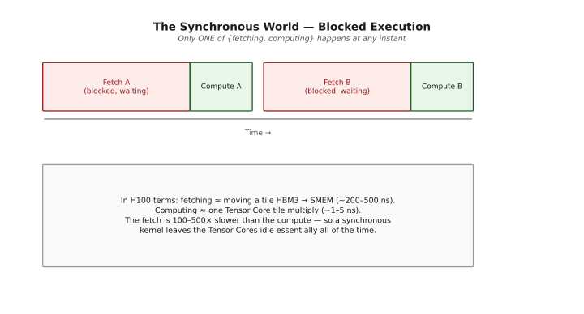
Fetch A blocks the thread completely before Compute A can even start, and the same happens again for Fetch B — only one of {fetching, computing} ever happens at a time, and on the H100 a fetch (HBM3 → SMEM, ~200–500 ns) is 100–500× slower than the compute it's blocking (~1–5 ns per Tensor Core tile multiply).
1.2 Latency Hiding — The Async Solution¶
Asynchronicity solves the blocked-waiting problem by decoupling the request from the result. Instead of waiting for a fetch to complete before doing anything else, you issue the fetch, immediately go do something else useful, and only come back to use the fetched data when it's actually needed.
The cooking analogy: put the water on, go chop vegetables while it heats, come back when you hear the boil. You accomplished two tasks in the time it took to do one. This is latency hiding — you didn't make the water boil faster, but you hid its latency behind useful work.
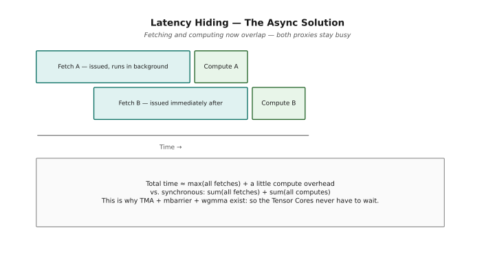
Fetch A and Fetch B are issued back to back and run concurrently in the background; Compute A and Compute B each start as soon as their own fetch lands. Total time collapses to roughly max(all fetches) instead of sum(all fetches) + sum(all computes) — a speedup of up to fetch_latency / compute_time, which on this hardware is 100–500×.
The key insight:
─────────────────────────────────────────────────────────────────
If fetch_cost >> compute_cost, you MUST overlap them.
The H100's Tensor Cores can multiply 256×128×64 matrices in ~1ns.
Moving that tile from HBM3 takes ~200ns.
Synchronous execution: 99.5% of time is wasted waiting.
Async execution with pipelining: Tensor Cores run at near 100% utilization.
This is why the H100's true genius is not its raw FLOPS count.
It is the hardware infrastructure that ensures the Tensor Cores
never have to wait. That infrastructure is:
├── TMA (Tensor Memory Accelerator) for async bulk copies
├── mbarrier for tracking completion of async operations
├── wgmma (Warp Group MMA) for non-blocking tensor core ops
└── The proxy/fence system for safe cross-unit memory ordering
2 — Asynchronicity¶
The core idea, stated in its most general form: separate the moment you ask for something from the moment you use it.
That sounds obvious written down, but it has a sharp consequence. Between the request and the result there is now a window in which the data is neither absent nor present — in flight. Every difficulty in the rest of this chapter comes from that window: how you know it has closed, and what you're forbidden from doing while it's open.
2.1 Decoupling Request from Result¶
The fundamental mechanism of asynchronicity is that issuing an operation and receiving its result are separate events, potentially separated by large amounts of time (and other useful work). The three-stage pattern is universal:
The Three-Stage Async Pattern
══════════════════════════════════════════════════════════════════════
Stage 1: INITIALIZATION — Fire and forget
─────────────────────────────────────────────────────────────────
A thread issues an asynchronous operation.
The thread does NOT wait. It immediately moves to the next instruction.
The async operation begins running in the background on dedicated hardware.
In CUDA:
cp.async.bulk.tensor ... ; // TMA copy starts in background
// thread is already on the next instruction ↓
Stage 2: TRACKING AND PARALLEL EXECUTION
─────────────────────────────────────────────────────────────────
The async operation runs on dedicated hardware units:
├── TMA (cp.async.bulk): runs on the TMA engine, completely
│ independent of the SM's compute units
└── WGMMA: runs on Tensor Cores via the wgmma scoreboard
Meanwhile, the thread (or other threads) can:
├── Issue more async operations (build up a pipeline)
├── Do independent computation
├── Update metadata, advance loop counters
└── Check whether a previous async op is done (non-blocking check)
The tracking mechanism:
For TMA copies: mbarrier object in shared memory tracks progress
For WGMMA: hardware scoreboard (internal, not directly visible)
Stage 3: SYNCHRONIZATION — Consume the result
─────────────────────────────────────────────────────────────────
Before using the data that was fetched asynchronously, the thread
must confirm the async operation is complete.
Two synchronization styles:
BLOCKING: thread.wait() — stalls until done (simple but kills latency hiding)
NON-BLOCKING: if (thread.is_done()) { use_data(); } else { do_other_work(); }
On H100, non-blocking is: mbarrier.try_wait.parity
This returns true/false without stalling. The thread can spin or yield.
─── Why Non-Blocking Synchronization Matters ─────────────────────
Old style (blocking, wastes time):
cp.async ... // start copy
bar.sync // STALL until all threads arrive (blocks entire warp!)
use data // finally use it
New style (non-blocking, hides latency):
cp.async.bulk ... // start copy for tile K+1
wgmma ... // compute tile K (using previously fetched data)
mbarrier.try_wait // check: is tile K+1 ready yet?
if ready: advance // use tile K+1 data immediately when ready
3 — Blocking vs Non-Blocking Operations¶
The same distinction, now in the vocabulary you'll see in the PTX manual.
A blocking operation doesn't return until the work is done. A non-blocking one returns immediately and leaves you holding a promise. §3.1 makes the case that blocking is often perfectly fine — not everything needs to be asynchronous, and asynchrony you don't need is pure complexity. §3.2 covers the case where it isn't fine, which on this hardware is most of the interesting ones.
3.1 Blocking Operations — When Sequential Is Fine¶
A blocking operation pauses the calling thread until the operation finishes. Control does not return until completion. This creates an implicit synchronization point.
The advantage is simplicity: after a blocking call returns, you know the operation is done. The disadvantage is wasted time — the thread idles while waiting.
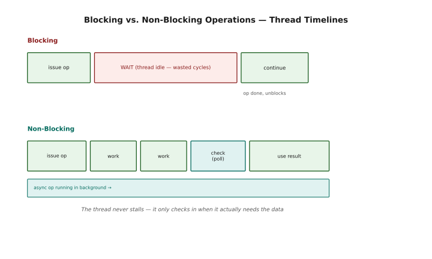
Blocking: the thread issues the op and then sits idle until it completes before it can continue — the gap between issue and continue is pure wasted cycles. Non-blocking (§3.2): the thread issues the op, keeps doing other work, and only checks in with a poll once it actually needs the result.
Blocking Operations — Reference
══════════════════════════════════════════════════════════════════════
CUDA examples of blocking operations:
─────────────────────────────────────────────────────────────────
cudaDeviceSynchronize() // host blocks until ALL GPU work done
cudaMemcpy(..., HostToDevice) // host blocks until copy complete
__syncthreads() // thread blocks until ALL block threads arrive
bar.sync 0; // PTX: thread blocks at barrier
When blocking is acceptable:
─────────────────────────────────────────────────────────────────
├── Setup/teardown operations (one-time cost, not in hot loop)
├── When you have no other useful work to do anyway
├── When simplicity matters more than peak performance
└── Between pipeline stages when data dependency is unavoidable
3.2 Non-Blocking Operations — The Key to Latency Hiding¶
A non-blocking operation returns control immediately to the launching thread before the operation has finished. The thread must later check for completion via a separate mechanism.
Non-Blocking Operations — Reference
══════════════════════════════════════════════════════════════════════
CUDA examples of non-blocking operations:
─────────────────────────────────────────────────────────────────
cp.async.bulk.tensor ... // starts TMA copy, returns immediately
wgmma.mma_async ... // starts tensor core op, returns immediately
mbarrier.try_wait.parity ... // checks completion, returns true/false
cudaMemcpyAsync(...) // host-side: starts copy, returns immediately
The critical invariant:
─────────────────────────────────────────────────────────────────
Non-blocking means the operation IS RUNNING in the background.
It does NOT mean the operation is skippable or optional.
You MUST eventually synchronize before using the result.
Failing to synchronize = reading garbage data (silent bug!).
4 — Asynchrony in GPUs¶
Now the general idea gets specific to this machine.
§4.1 puts numbers on the mismatch: how many arithmetic operations an H100 SM can retire in the time one HBM request takes to come back. The ratio is the reason async on a GPU is not a technique you reach for when convenient but the default way the machine is meant to be driven.
§4.2 names the two distinct problems it solves — hiding latency, and freeing the SM's threads from doing address arithmetic — which are often conflated.
4.1 The Speed Mismatch — Why Async Is Not Optional¶
In modern computing, arithmetic is incredibly fast and memory access is agonizingly slow by comparison. On the H100:
Speed Mismatch — H100 Numbers
══════════════════════════════════════════════════════════════════════
Operation Latency Bandwidth
─────────────────────────────────────────────────────────────────
Register read ~1 cycle N/A (on-chip)
Shared memory read ~4-10 cycles ~19 TB/s (per SM)
L2 cache read (hit) ~100 cycles ~12 TB/s (all SMs, est.)
HBM3 read (DRAM) ~200-500 cycles 3.35 TB/s (all SMs)
Tensor Core throughput (FP8): 1,979 TFLOPS dense / 3,958 TFLOPS sparse (H100 SXM5 peak)
Time to do 1 GEMM tile (128×128×64, FP8): < 1 μs
Time to load that same tile (128×128×64 FP8 = 1 MB) from HBM3:
1 MB ÷ (3.35 TB/s ÷ 132 SMs) ≈ 40 μs (per SM's share of bandwidth,
out of the 132 SMs enabled on the shipping H100 SXM5 die)
Ratio: memory time / compute time ≈ 40 μs / 1 μs = 40×
Without async: Tensor Cores idle 97.5% of the time. Pure waste.
H100 has dedicated hardware units that run completely independently of each other:
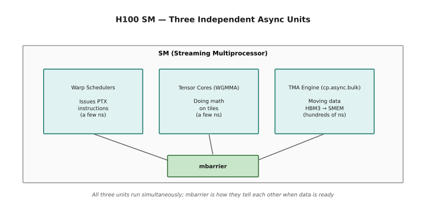
The warp scheduler issues instructions in a few nanoseconds, Tensor Cores crunch on previously fetched tiles in a few nanoseconds, and the TMA Engine moves data from HBM3 to SMEM in the hundreds of nanoseconds it actually takes — all three run simultaneously, and mbarrier is the mechanism that tells each of them when the others' work is ready.
4.2 The Two Problems Async Solves¶
There are exactly two failure modes when fast and slow units work together without synchronization:
The Two Problems
══════════════════════════════════════════════════════════════════════
PROBLEM 1: Computing on data that hasn't arrived yet
─────────────────────────────────────────────────────────────────
Without coordination:
cp.async.bulk ... ; // issue copy (TMA starts, ~200ns to complete)
wgmma ... // compute IMMEDIATELY (data not here yet!)
→ Tensor Cores multiply garbage values. Silent wrong answer.
This is the "too fast" problem — the compute unit outpaces the
memory unit and computes on stale/uninitialized data.
PROBLEM 2: Overwriting data that is still being used
─────────────────────────────────────────────────────────────────
Without coordination:
wgmma smem[tile_K] ... // Tensor Cores reading tile K
cp.async.bulk → smem[tile_K] // TMA overwrites tile K with tile K+1!
→ Tensor Cores multiply corrupted mid-stream data. Wrong answer.
This is the "too eager" problem — the producer overwrites a buffer
that the consumer hasn't finished reading yet.
─── The Solution: mbarrier ──────────────────────────────────────
mbarrier is the synchronization primitive that solves BOTH problems:
For Problem 1 (compute waits for data):
mbarrier tracks when the TMA copy is done.
Tensor Cores wait on the mbarrier before starting compute.
→ Tensor Cores only see valid data.
For Problem 2 (copy waits for compute to finish reading):
A second mbarrier tracks when wgmma is done reading.
TMA waits on that mbarrier before issuing the next copy.
→ TMA never overwrites data still in use.
This two-barrier pattern (one for "data ready", one for "buffer free")
is the foundation of every high-performance GPU pipeline.
5 — Proxies in CUDA¶
This section introduces the single most under-explained term in the CUDA memory model, and skipping it will make Sections 6 and 7 incomprehensible.
A proxy is simply who is performing a memory access. When your thread executes a load, that's the generic proxy. When the TMA engine moves a tile in the background, that's the async proxy — a completely separate piece of hardware, taking a different path through the memory system.
The consequence is the part that matters: two proxies touching the same address do not automatically see each other's work. Not because of a bug, but because they are physically different agents on different paths. Everything in §6 and §7 exists to bridge that gap.
5.1 What Is a Proxy?¶
The term "proxy" in CUDA's memory model refers to the agent performing a memory operation. This is one of the least-taught but most critical concepts for understanding why memory hazards occur and how fences fix them.
Different proxies have different views of memory. They access memory through different hardware paths, which means they can have inconsistent views of the same memory location at the same point in time. A write done by Proxy A may not be visible to Proxy B unless an explicit ordering instruction (a fence) is used to synchronize the two views.
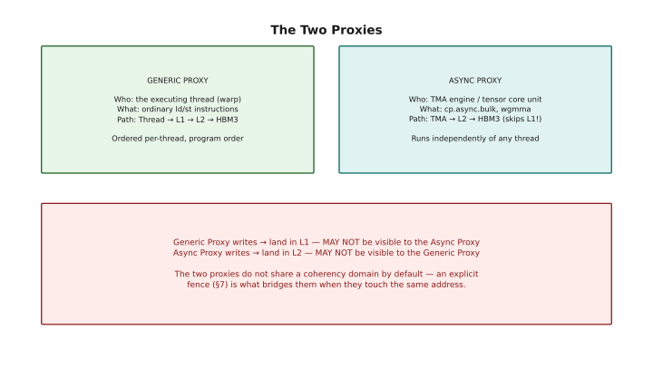
The Generic Proxy is the thread itself, issuing ordinary ld/st and routed through L1 → L2 → HBM3. The Async Proxy is dedicated hardware (the TMA engine, the tensor cores) running cp.async.bulk / wgmma, routed through L2 → HBM3 with L1 skipped entirely — and running completely independently of any thread. Because they don't share a coherency domain by default, a write from one is not guaranteed visible to the other without an explicit fence (§7).
The Two Proxies — PTX Examples
══════════════════════════════════════════════════════════════════════
Generic Proxy:
ld.global.f32 → generic proxy reads from global memory
st.shared.f32 → generic proxy writes to shared memory
ld.shared.f32 → generic proxy reads from shared memory
Ordered PER THREAD in program order (with some hardware
reordering at scope boundaries).
Async Proxy:
cp.async.bulk.tensor ... → TMA engine moves data (async proxy)
wgmma.mma_async ... → tensor cores compute (async proxy)
The thread that issued the command has NO IDEA when it finishes
and does not automatically see the result.
5.2 Why Two Proxies Exist — The Hardware Reality¶
The previous section described the two proxies as an abstraction. Here is the physical reason they are distinct: trace the two paths through the diagram below and notice that the generic proxy goes through L1 while the async proxy does not.
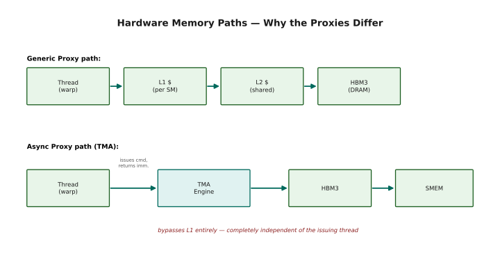
The Generic Proxy's path runs Thread → L1 → L2 → HBM3. The Async Proxy's path has the thread issue a command and return immediately, while the TMA Engine itself moves data HBM3 → SMEM completely independently — bypassing L1 entirely. When TMA writes to shared memory and the Generic Proxy later reads from shared memory through L1, those are genuinely different hardware paths that do not automatically stay in sync.
The Consequence in Plain English
══════════════════════════════════════════════════════════════════════
Scenario: Thread writes to global memory, then TMA reads same address.
Thread (Generic Proxy):
st.global [addr], val // stores val to L1, scheduled for L2/HBM
TMA Engine (Async Proxy) — issued IMMEDIATELY after:
cp.async.bulk [addr] → smem // TMA reads addr directly from L2/HBM
RACE: The thread's write might still be in L1, not yet in L2.
TMA reads the OLD value from L2. Your data pipeline is corrupted.
→ This is why fence.proxy.async exists (Section 7).
6 — Memory Hazards¶
Two concrete ways the proxy split will corrupt your data if you don't intervene.
A RAW hazard (§6.1) is writing something with your thread and then having the TMA read it before your write has become visible — the TMA fetches stale data. A WAR hazard (§6.2) is the mirror image: the TMA overwrites a buffer while your thread is still reading the old contents out of it.
Both are timing-dependent, which means both will pass your tests on a small input and fail in production. Learn to recognise the shapes.
6.1 Read-After-Write (RAW) Hazard¶
A RAW hazard occurs when the Async Proxy reads from a location that the Generic Proxy has recently written, but the write has not yet propagated to where the Async Proxy can see it. The Async Proxy reads stale data.
Intended sequence: (1) Generic Proxy writes value V to address X, (2) Async Proxy reads address X and should see V. Here is what can happen without a fence:
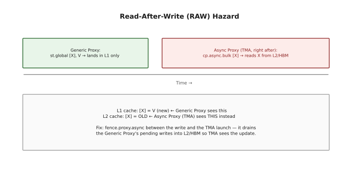
The Generic Proxy's st.global [X], V lands in L1 only — not yet propagated to L2/HBM. The Async Proxy's cp.async.bulk [X], issued right after, reads X directly from L2/HBM and gets the OLD value: L1 has [X] = V but L2 still has [X] = OLD, and the TMA only ever sees L2. The fix is fence.proxy.async between the write and the TMA launch, draining the Generic Proxy's pending writes into L2/HBM first.
Read-After-Write (RAW) Hazard — Concrete Example
══════════════════════════════════════════════════════════════════════
Concrete example where this matters:
─────────────────────────────────────────────────────────────────
// Host writes scale factor to global memory
float* scale_ptr = allocate_global();
*scale_ptr = 2.5f; // host writes (cudaMemcpy under the hood)
// Kernel thread updates scale, then TMA reads related data
st.global [scale_ptr], 3.0f; // Generic Proxy: scale updated
cp.async.bulk [data_ptr] → smem; // Async Proxy: reads data
// If data depends on scale (e.g., packed together), TMA might
// read an old version because the write is still in L1.
FIX: fence.proxy.async between the write and the TMA launch.
This drains the Generic Proxy's pending writes into L2/HBM
so TMA sees the updated values.
6.2 Write-After-Read (WAR) Hazard¶
A WAR hazard occurs when the Async Proxy writes to a location that the Generic Proxy has recently read and cached locally. The Generic Proxy continues using its stale cached copy even though the true value has been updated.
Intended sequence: (1) Generic Proxy reads value V from address X, possibly caching it, (2) Async Proxy writes new value V' to address X, (3) Generic Proxy should now see V' — but without synchronization, sees stale V instead. Here is what can happen:
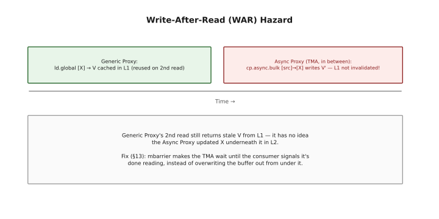
The Generic Proxy's ld.global [X] loads V into L1; a later ld.global [X] hits L1 and returns the same cached V, with no idea the Async Proxy has since updated X. In between, the Async Proxy's cp.async.bulk [src]→[X] writes V' to X via L2 without invalidating the Generic Proxy's L1 line — so the Generic Proxy keeps reading stale data (§13's two-barrier handshake is the fix).
Write-After-Read (WAR) Hazard — Failure Modes
══════════════════════════════════════════════════════════════════════
Two failure modes:
─────────────────────────────────────────────────────────────────
Mode 1: Stale read — Generic Proxy keeps reading old value from L1
even though Async Proxy has updated the true value in L2.
Mode 2: Lost write — Generic Proxy's L1 line gets evicted back to L2
overwriting the new value that Async Proxy just wrote.
(L1 eviction clobbers the Async Proxy's update)
The WAR hazard is the most dangerous in GPU kernel pipelines:
─────────────────────────────────────────────────────────────────
Classic scenario in a pipelined GEMM:
Step 1: wgmma reads tile K from smem[A] (Generic/Async reads smem)
Step 2: TMA loads tile K+1 INTO smem[A] (Async Proxy writes smem)
HAZARD: wgmma is still reading smem[A] while TMA overwrites it!
Result: wgmma computes on a mix of tile K and tile K+1 data. Wrong answer.
FIX: Use mbarrier to make TMA wait until wgmma signals it's done reading.
This is covered in Section 13 (WAR hazards and mbarrier.arrive).
7 — Fences¶
A fence is how you tell the hardware "do not reorder across this line."
There are three you need, and they come in a natural pairing. A release fence (§7.2) is used by whoever produces data: it guarantees everything written before it is visible before the signal that says it's ready. An acquire fence (§7.3) is used by whoever consumes it: it guarantees nothing is read early. And a cross-proxy fence (§7.4) is the one specific to this chapter — it bridges the generic and async proxies from §5.
§7.1 also introduces scope, which is the knob that decides how much a fence costs: ordering within a block is cheap, ordering across the whole GPU is not.
7.1 What Is a Fence and Why Do We Need One?¶
A fence is an explicit instruction that constrains the ordering and visibility of memory operations. Without fences, the hardware (and compiler) may reorder or delay memory operations for performance, creating the hazards described in Section 6.
Fences are scoped: they apply to a specific level of the memory hierarchy (CTA, cluster, GPU, system). A .cta fence makes writes visible to other threads in the same block. A .gpu fence makes writes visible to ALL threads on the GPU. Using a wider scope than necessary wastes time.
Fence Scopes and Their Costs
══════════════════════════════════════════════════════════════════════
Scope Who Sees the Ordering Hardware Cost PTX Suffix
─────────────────────────────────────────────────────────────────
.cta Threads in same block Cheapest .cta
.cluster Blocks in same cluster Moderate .cluster
.gpu All threads on GPU Expensive .gpu
.sys CPU + GPU (PCIe visible) Most expensive .sys
Rule: Use the NARROWEST scope that provides the ordering you need.
In practice: most kernel code uses .cta or .cluster.
─── Compiler Reordering — Why Fences Are Also Needed for Compilers ─
Compilers reorder instructions to improve performance:
a = 1; // Compiler might emit: b = 2; a = 1; c = a+b;
b = 2; // because a=1 and b=2 appear independent
c = a + b;
In single-threaded code: reordering is usually harmless.
In multi-threaded GPU code: reordering breaks correctness because
different threads observe operations in different orders.
Example race condition from reordering:
─────────────────────────────────────────────────────────────────
Thread A: Thread B:
data[0] = 42.0f; while (flag == 0); // spin
flag = 1; float x = data[0]; // use data
Without a fence after "data[0] = 42", the compiler (or hardware)
might reorder so "flag = 1" executes BEFORE "data[0] = 42".
Thread B sees flag=1 but data[0] is still 0. Silent bug!
With a RELEASE fence after the write and ACQUIRE fence before the read:
Thread A: write data → RELEASE fence → write flag
Thread B: read flag → ACQUIRE fence → read data
The fences prevent reordering across the fence boundary.
7.2 Release Fence — Producer Side¶
A release fence creates a one-way barrier: all memory operations (especially writes) that appear before the release are guaranteed to become visible before anything that appears after the release. The release says "I am done producing; anyone who synchronizes with me will see all my prior writes."
Release Fence — Visualization
══════════════════════════════════════════════════════════════════════
Program order:
write A;
write B;
write C;
─── RELEASE FENCE ─── ← nothing above can move below this line
signal done;
Guarantee: When another thread observes "signal done", it is
guaranteed to also see writes A, B, and C.
PTX:
st.global [A], val_A;
st.global [B], val_B;
fence.release.cta; // release fence (CTA scope)
st.shared [flag], 1; // signal: writes above are visible
Use cases:
─────────────────────────────────────────────────────────────────
├── After a thread finishes writing a data tile to SMEM
├── Before signaling other threads that data is ready
├── mbarrier.arrive.release: signals barrier with release semantics
└── Before launching a TMA copy of data written by the thread
7.3 Acquire Fence — Consumer Side¶
An acquire fence creates the opposite one-way barrier: no memory operation that appears after the acquire can be observed as happening before it. The acquire says "I am about to consume; let me see all writes that were released before I proceed."
Acquire Fence — Visualization
══════════════════════════════════════════════════════════════════════
Program order:
read flag;
─── ACQUIRE FENCE ─── ← nothing below can move above this line
read A;
read B;
use A and B;
Guarantee: After the acquire, this thread sees all writes that
were done before the matching release fence on the producer side.
PTX:
ld.shared [flag], flag_val;
fence.acquire.cta; // acquire fence
ld.shared [A], val_A; // guaranteed to see producer's A
ld.shared [B], val_B; // guaranteed to see producer's B
Pair with mbarrier:
mbarrier.try_wait.parity.acquire.cta [barrier_addr], parity;
// The .acquire suffix on try_wait provides the acquire fence
// automatically when the barrier signals completion.
// After this returns true, all writes from the producer are visible.
7.4 Cross-Proxy Fence — Synchronizing Generic and Async Proxies¶
When data must cross proxy boundaries (Generic Proxy writes, Async Proxy reads, or vice versa), a regular fence is not enough. You need fence.proxy.async to drain the Generic Proxy's pending writes so the Async Proxy sees them.
Cross-Proxy Fence — When and Why
══════════════════════════════════════════════════════════════════════
The Rule: If the same memory location is accessed by BOTH the
Generic Proxy AND the Async Proxy, you need fence.proxy.async.
Scenario 1 (Generic writes, Async reads):
─────────────────────────────────────────────────────────────────
// Thread fills a staging buffer in global/shared memory
for (int i = 0; i < N; i++)
smem[i] = compute_value(i); // Generic Proxy writes
__syncthreads(); // wait for all threads to write
fence.proxy.async; // ← CROSS-PROXY FENCE
// Ensures: Generic Proxy's writes are drained to L2/SMEM
// so TMA engine (Async Proxy) sees the updated values
cp.async.bulk.tensor ...; // Async Proxy reads from smem
Without fence.proxy.async: TMA might read old SMEM values from
before the thread's writes were fully committed.
Scenario 2 (Async writes, Generic reads):
─────────────────────────────────────────────────────────────────
mbarrier.try_wait ...; // wait for TMA to finish writing
fence.proxy.async; // ← CROSS-PROXY FENCE
// Ensures: TMA's writes (Async Proxy) are visible to
// the thread's subsequent load instructions (Generic Proxy)
float val = smem[i]; // Generic Proxy reads TMA's data
NOTE: mbarrier.try_wait.acquire already includes an acquire fence.
In practice: if you use .acquire on try_wait, you often don't need
an explicit fence.proxy.async. But it's always safe to be explicit.
Important nuance:
─────────────────────────────────────────────────────────────────
fence.proxy.async is NOT a collective operation.
It orders memory for the CALLING THREAD only.
You still need __syncthreads() (or cluster sync) to ensure
ALL threads have issued the fence before proceeding.
8 — mbarrier — The Core Primitive¶
Here is the payoff. Everything from §5 to §7 was setup for this.
An mbarrier is a small object you place in shared memory that answers one
question: has the thing I'm waiting for happened yet? What makes it more than
an ordinary barrier is that hardware can signal it. The TMA, having finished
depositing a tile, decrements the barrier itself — no thread has to poll, no
thread has to wait around to be told.
This is the primitive that every H100 GEMM, every FlashAttention kernel, and every CUTLASS pipeline is built on. §8.1 covers what it is; §8.2 covers creating one, including the arrival count that trips up most first attempts.
8.1 What Is mbarrier?¶
The mbarrier (memory barrier) is the H100's hardware-accelerated synchronization primitive. It lives in shared memory (not registers) and tracks the completion of asynchronous memory transactions.
Unlike __syncthreads() which blocks until a number of threads arrive, the mbarrier blocks until a certain amount of data arrives. It decouples the "Producer" (who issues the async copy) from the "Consumer" (who waits for the data), enabling pipelines where copies and computes truly overlap.
mbarrier vs __syncthreads — Key Differences
══════════════════════════════════════════════════════════════════════
__syncthreads() (bar.sync):
─────────────────────────────────────────────────────────────────
├── Counts THREADS arriving at a synchronization point
├── Blocks until ALL threads in the block reach the call
├── No concept of "data arriving" — just thread arrival
├── Completely blocking: warp sleeps until done
└── Cannot coordinate with TMA or WGMMA async units
mbarrier:
─────────────────────────────────────────────────────────────────
├── Counts BOTH threads arriving AND bytes of data arriving
├── Tracks asynchronous operations (TMA, WGMMA) automatically
├── Can be NON-BLOCKING: try_wait returns true/false immediately
├── Supports reuse via phase flipping (no re-init needed)
└── Hardware-accelerated: TMA decrements the byte count directly
Physical location: mbarrier object lives in SHARED MEMORY (64 bits)
Why shared memory: it must be accessible to TMA hardware and threads
The mbarrier object itself is a single 64-bit value in shared memory:
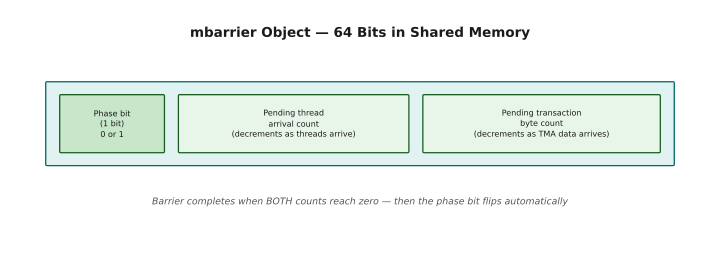
A 1-bit phase, a pending thread arrival count that decrements as threads arrive, and a pending transaction byte count that decrements as TMA data arrives. The barrier completes only once both counts reach zero, and on completion the phase bit flips (0→1 or 1→0) automatically.
8.2 Initializing mbarrier — mbarrier.init¶
This is the most bug-prone instruction in the entire mbarrier system. Getting initialization wrong means nothing else works correctly.
mbarrier.init — Syntax and Semantics
══════════════════════════════════════════════════════════════════════
PTX syntax:
mbarrier.init.shared::cta.b64 [addr], count;
Parameters:
addr: 32-bit shared memory address of the mbarrier object
(obtained via __cvta_generic_to_shared(&my_mbarrier))
count: Expected thread arrival count (uint32_t)
This is the value to which the thread count resets on reuse.
What init does:
├── Sets pending thread arrival count = count
├── Sets pending transaction byte count = 0
├── Sets phase bit = 0 (starting in Phase 0)
└── Arms the barrier for its first use
─── Rules and Common Mistakes ───────────────────────────────────
Rule 1: ONLY ONE thread should call mbarrier.init per barrier.
Only thread 0 in the block should call init. If multiple threads
call init on the same barrier, they race to initialize it and
the final state is undefined.
Rule 2: The mbarrier object MUST be 8-byte (64-bit) aligned.
Unaligned access may cause silent data corruption.
Ensure: alignas(8) uint64_t barrier; or __align__(8)
Rule 3: The addr must be a shared memory address (32-bit offset).
Use: __cvta_generic_to_shared(&my_barrier) (gives 32-bit)
NOT: reinterpret_cast<uint64_t>(&my_barrier) (gives 64-bit generic)
Rule 4: The scope must match your use case.
.shared::cta → only threads in this block can use this barrier
.shared::cluster → threads in ANY block of the cluster can use it
(requires mapa for address in other blocks)
─── Code Pattern ────────────────────────────────────────────────
// In shared memory (MUST be aligned to 8 bytes!)
__shared__ __align__(8) uint64_t mbar;
// INIT: only thread 0 calls this
if (threadIdx.x == 0) {
uint32_t mbar_addr = __cvta_generic_to_shared(&mbar);
// Expected thread arrival count = 1 (only 1 thread will "arrive")
// In a typical TMA pattern, only the producer thread arrives.
asm volatile(
"mbarrier.init.shared::cta.b64 [%0], %1;"
: : "r"(mbar_addr), "r"(1u) // count = 1
);
}
__syncthreads(); // ALL threads must wait for init to complete!
// Without __syncthreads here, other threads might use the barrier
// before thread 0 has initialized it. Classic race condition.
9 — The mbarrier Pipeline — Step by Step¶
The five-step sequence that essentially every TMA kernel on this hardware follows. If you learn one pattern from this chapter, learn this one.
§9.2 covers the instruction that surprises people: mbarrier.arrive.expect_tx
does two jobs at once — it registers an arrival and declares how many bytes
are about to show up. That second job is what lets the TMA close the barrier on
its own.
9.1 Overview of the Full Pipeline¶
The complete mbarrier pipeline has five steps. Every high-performance kernel on H100 that uses TMA follows this exact pattern.
The mbarrier Pipeline — Complete Flow
══════════════════════════════════════════════════════════════════════
STEP 1: Initialize
──────────────────
Thread 0: mbarrier.init [mbar_addr], expected_thread_count
Purpose: Create the barrier in SMEM. Set thread count. Phase = 0.
Who: ONLY thread 0. All others wait with __syncthreads().
STEP 2: Set expected transaction count (bytes to receive)
──────────────────────────────────────────────────────────
Producer thread: mbarrier.arrive.expect_tx [mbar_addr], tx_count
Purpose: Tell the barrier how many bytes the upcoming async op
will deliver. Also decrements the thread arrival count by 1.
Who: The thread that will issue the TMA copy (usually thread 0
or the elected producer thread in the warp).
STEP 3: Launch the async operation
────────────────────────────────────
Producer thread: cp.async.bulk.tensor ... [mbar_addr]
Purpose: Start the TMA copy. Pass the mbarrier address to the TMA
so the hardware automatically decrements the tx byte count
as data arrives. Thread returns immediately.
Who: Same producer thread (or any thread — the mbar address
links TMA to the specific barrier object).
STEP 4: Do useful work (LATENCY HIDING happens here!)
──────────────────────────────────────────────────────
All threads: do independent work, issue other async ops, etc.
Purpose: While TMA is moving data, other work runs in parallel.
This is where you overlap the copy with compute on
previously fetched data.
STEP 5: Wait for completion
────────────────────────────
Consumer threads: mbarrier.try_wait.parity [mbar_addr], phase_parity
Purpose: Spin (or yield) until both the thread arrival count AND
the transaction byte count reach zero. When both are zero,
the barrier PHASE FLIPS automatically (0→1 or 1→0).
Who: All threads that need the data (consumer warps).
STEP 6: Process data, then flip phase for reuse
─────────────────────────────────────────────────
All threads: process the data that TMA brought in
Then: phase ^= 1; (toggle local phase tracking variable)
Repeat steps 2-6 for the next tile (barrier reused!).
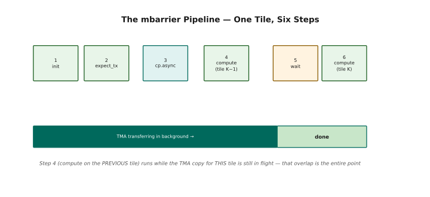
Steps 1–3 set up the barrier and launch the TMA copy; the TMA then runs in the background while Step 4 computes on the PREVIOUS tile (K−1) — that overlap is the entire reason this pattern exists. Step 5 waits for the TMA to finish and the phase to flip, and only then does Step 6 compute on the tile that just arrived.
9.2 mbarrier.arrive.expect_tx — Setting the Transaction Count¶
This instruction does two things simultaneously: it decrements the thread arrival count by 1 (as if this thread "arrived") AND it adds tx_count bytes to the barrier's pending transaction byte count.
mbarrier.arrive.expect_tx — Manual Worked Example
══════════════════════════════════════════════════════════════════════
Setup:
mbarrier initialized with expected_thread_count = 1
We will issue a TMA copy of 1024 bytes (256 floats)
After mbarrier.init:
phase bit = 0
pending thread count = 1 ← must reach 0 for completion
pending tx bytes = 0 ← must reach 0 for completion
After mbarrier.arrive.expect_tx [mbar], tx_count=1024:
pending thread count = 1 - 1 = 0 ← thread arrival DONE
pending tx bytes = 0 + 1024 = 1024 ← 1024 bytes expected
Barrier completes when BOTH are zero:
Thread count = 0 ✓ (already)
TX bytes = 0 ✗ (still waiting for TMA to deliver 1024 bytes)
As TMA copies data (e.g., 128 bytes at a time):
After 128 bytes: pending tx = 896
After 256 bytes: pending tx = 768
...
After 1024 bytes: pending tx = 0 ← TMA done!
Now BOTH counts are 0 → barrier completes → phase flips: 0 → 1
mbarrier.try_wait.parity [mbar], parity=0 → returns TRUE (phase was 0, now 1)
─── PTX Instruction ─────────────────────────────────────────────
PTX:
mbarrier.arrive.expect_tx.release.shared::cta.b64 _, [mbar_addr], tx_count;
The _ (underscore) placeholder:
The instruction can optionally return a 64-bit "phase token"
(the current state of the barrier). We discard it with _.
Why discard? Register pressure. A 64-bit token costs 2 registers.
Instead, we track the phase ourselves with a 1-bit integer.
phase ^= 1 (a single XOR) is much cheaper than storing a 64-bit token.
The .release suffix:
Provides release semantics — writes before this instruction
are guaranteed visible before the barrier signals completion.
Use this if the producer thread wrote data to SMEM that the
consumer threads will read after the barrier completes.
10 — Phase and Transaction Count¶
An mbarrier tracks two independent things, and confusing them is the most
common source of hangs.
The phase (§10.1) is a single bit that says which generation of use the barrier is in. It flips every time the barrier completes, and it exists so a barrier can be reused in a loop without you having to reinitialise it. The transaction count (§10.2) tracks bytes rather than threads — it's how the barrier knows a TMA copy has fully landed and not just started.
Threads move the phase. The TMA moves the transaction count. The barrier completes when both are satisfied.
10.1 Phase — The Barrier's Reuse Bit¶
The phase bit is a single bit that distinguishes one "generation" of barrier use from the next. It flips automatically every time the barrier completes. This allows you to reuse the same mbarrier object for multiple rounds without re-initializing it.
Phase Bit — How Reuse Works
══════════════════════════════════════════════════════════════════════
Without phase flipping (naive approach — WRONG):
─────────────────────────────────────────────────────────────────
Round 1: init barrier → issue copy → wait → use data → RE-INIT?
↑ would need to re-initialize, which is expensive and racy
With phase flipping (correct approach):
─────────────────────────────────────────────────────────────────
Round 1: init (phase=0) → arrive.expect_tx → cp.async.bulk → wait(parity=0)
Barrier completes → phase flips to 1 automatically
Round 2: (NO re-init!) arrive.expect_tx → cp.async.bulk → wait(parity=1)
Barrier completes → phase flips back to 0 automatically
Round 3: arrive.expect_tx → cp.async.bulk → wait(parity=0) ...
The thread tracks phase with a local variable:
int phase = 0; // tracks which phase we are waiting for
// After each completion:
phase ^= 1; // toggle: 0→1 or 1→0
─── Phase Variable Storage — Registers NOT Shared Memory ─────────
CRITICAL: The phase variable is stored in REGISTERS, not SMEM!
WRONG:
__shared__ int phase; // shared memory — wastes SMEM, races
phase = 0;
RIGHT:
int phase = 0; // register — cheap, private to each thread
Why registers?
├── Cheaper: register XOR costs 1 cycle; SMEM access costs ~10 cycles
├── No bank conflicts or races (each thread has its own copy)
└── phase ^= 1 is a single instruction vs an SMEM load-modify-store
─── Visual — Phase Flipping Over Multiple Tiles ──────────────────
Tile: K=0 K=1 K=2 K=3
Phase: 0 →1 1 →0 0 →1 1 →0
↑ ↑ ↑ ↑
completes completes completes completes
wait(parity=0) succeeds when phase was 0 and just flipped to 1.
wait(parity=1) succeeds when phase was 1 and just flipped to 0.
10.2 Transaction Count — Tracking Async Data Delivery¶
The transaction count tracks how many bytes of data the async operation is expected to deliver. TMA decrements this count automatically as it copies data. When it reaches zero, that half of the completion condition is satisfied.
Transaction Count — Manual Worked Example with Two Copies
══════════════════════════════════════════════════════════════════════
Scenario: Two TMA copies contribute to one barrier.
Copy 1: 512 bytes (matrix tile A)
Copy 2: 256 bytes (matrix tile B)
Total expected: 768 bytes
After mbarrier.init [mbar], thread_count=1:
pending threads = 1
pending tx bytes = 0
After mbarrier.arrive.expect_tx [mbar], 512: (for copy 1)
pending threads = 0 (decremented by 1: 1→0)
pending tx bytes = 512
After mbarrier.arrive.expect_tx [mbar], 256: (for copy 2)
pending threads = -1??? ERROR! Can't decrement below 0.
─── CORRECT: expect_tx doesn't decrement threads twice ───────────
The correct usage: call arrive.expect_tx ONCE to combine arrivals:
mbarrier.arrive.expect_tx [mbar], 768; // 512 + 256 combined
// OR: call it once with the total
OR: initialize with thread_count=2 and call arrive.expect_tx twice:
mbarrier.init [mbar], 2; // 2 thread arrivals expected
mbarrier.arrive.expect_tx [mbar], 512; // thread 1 arrives, adds 512
mbarrier.arrive.expect_tx [mbar], 256; // thread 2 arrives, adds 256
// pending threads: 2→1→0 ✓
// pending tx bytes: 0→512→768, then TMA decrements to 0
Key rule: each arrive.expect_tx call decrements thread count by 1
AND adds to the tx byte count. Design the counts carefully.
─── What Happens if Counts Don't Match Reality ───────────────────
If you set tx_count=512 but TMA actually copies 1024 bytes:
→ pending tx goes 512→0 (done!) immediately when 512 bytes arrive
→ barrier fires early, consumer reads incomplete data. WRONG.
If you set tx_count=1024 but TMA only copies 512 bytes:
→ pending tx goes 1024→512 and STOPS (never reaches 0)
→ try_wait spins forever. DEADLOCK.
tx_count MUST exactly equal the bytes that the linked TMA will copy.
Check your tensor descriptor dimensions carefully.
11 — mbarrier.try_wait and test_wait¶
Three ways to ask "is it ready yet", differing in what happens when the answer is no.
try_wait (§11.1) puts the warp to sleep and lets the scheduler run someone
else. test_wait (§11.2) returns immediately either way, which is what you want
if you have useful work to do while waiting. And try_wait.acquire (§11.3) is
try_wait plus the acquire fence from §7.3 folded in — which, as the subsection
title says, is the version you should actually be writing in production code.
11.1 mbarrier.try_wait.parity — Non-Blocking Wait¶
try_wait is the non-blocking completion check. It returns immediately with a boolean result: true if the barrier's current phase matches completion of the requested parity, false if still in progress.
mbarrier.try_wait.parity — How It Works
══════════════════════════════════════════════════════════════════════
PTX:
mbarrier.try_wait.parity.shared::cta.b64 waitComplete, [addr], phaseParity;
mbarrier.try_wait.parity.b64 waitComplete, [addr], phaseParity, suspendHint;
Parameters:
waitComplete: Destination predicate register (1=done, 0=not done)
addr: 32-bit shared memory address of mbarrier
phaseParity: Integer (0 or 1) — the phase you are waiting to COMPLETE
suspendHint: Optional: how long (cycles) to yield if not done
Logic:
─────────────────────────────────────────────────────────────────
The barrier's internal phase bit: internal_phase
Your phaseParity input: expected_phase
if (internal_phase == expected_phase):
// Barrier is STILL in the phase you're waiting for → NOT DONE
waitComplete = false (0)
// Thread may suspend for suspendHint cycles, then retry
if (internal_phase != expected_phase):
// Barrier has FLIPPED past the phase you waited for → DONE!
waitComplete = true (1)
// The phase completion you waited for has occurred.
─── Manual Worked Example ───────────────────────────────────────
Starting state: internal_phase = 0, phaseParity we check = 0
→ internal == expected → NOT DONE → waitComplete = 0
After TMA delivers all bytes AND thread count reaches 0:
→ barrier completes → internal_phase flips: 0 → 1
→ internal (1) != expected (0) → DONE → waitComplete = 1
Next round: we check phaseParity = 1
→ internal (1) == expected (1) → NOT DONE (waiting for phase 1 to complete)
→ After next TMA delivery: internal flips: 1 → 0
→ internal (0) != expected (1) → DONE → waitComplete = 1
─── Usage Pattern ───────────────────────────────────────────────
int phase = 0; // local register tracking our expected phase
// Spin until barrier signals completion:
while (true) {
uint32_t mbar_addr = __cvta_generic_to_shared(&mbar);
uint32_t done;
asm volatile(
"{\n\t"
" .reg .pred p;\n\t"
" mbarrier.try_wait.parity.shared::cta.b64 p, [%1], %2;\n\t"
" selp.u32 %0, 1, 0, p;\n\t"
"}\n\t"
: "=r"(done) : "r"(mbar_addr), "r"(phase)
);
if (done) break;
// Optionally yield here to let other work proceed
}
phase ^= 1; // update for next round
11.2 mbarrier.test_wait.parity — Non-Suspending Check¶
test_wait is the pure polling version. It checks the barrier state and returns true/false immediately with NO thread suspension. This is useful in tight loops where you want to keep the thread running other work between checks.
try_wait vs test_wait — When to Use Each
══════════════════════════════════════════════════════════════════════
mbarrier.try_wait.parity (can suspend):
─────────────────────────────────────────────────────────────────
├── Thread MIGHT be suspended (put to sleep) if barrier is not done
├── suspendHint tells hardware how long to sleep (optional)
├── When asleep: warp slot is freed for other warps to run
├── Best when: you have nothing else to do right now
└── Hardware analogy: "park and wait for a notification"
mbarrier.test_wait.parity (never suspends):
─────────────────────────────────────────────────────────────────
├── Thread NEVER suspends — returns true or false immediately
├── No suspendHint parameter
├── Thread keeps running after the check (regardless of result)
├── Best when: you have other work to interleave between checks
└── Hardware analogy: "glance at the clock while still walking"
PTX:
mbarrier.test_wait.parity.shared::cta.b64 done, [addr], phaseParity;
// Returns immediately: done=1 if complete, done=0 if not
Usage pattern for interleaved work:
─────────────────────────────────────────────────────────────────
// Issue async copy for tile K+1
cp.async.bulk.tensor ... [mbar_K1];
// Compute on tile K (already in SMEM from previous iteration)
wgmma_compute(tile_K);
// Check if tile K+1 is ready (non-suspending poll)
uint32_t k1_done;
asm("mbarrier.test_wait.parity ... %0, [%1], %2;"
: "=r"(k1_done) : "r"(mbar_addr), "r"(phase_k1));
if (!k1_done) {
// Not ready yet — do more independent work first
do_independent_work();
// Then block-wait for it
while (!test_wait(mbar_k1, phase_k1));
}
phase_k1 ^= 1;
// Now use tile K+1
11.3 mbarrier.try_wait with .acquire — The Safe Version¶
The .acquire suffix on try_wait is the production-correct version. When it returns true (barrier complete), it also applies an acquire memory fence, ensuring that all data written by the async operation is visible to this thread before it proceeds.
mbarrier.try_wait.parity.acquire — Why This Is Important
══════════════════════════════════════════════════════════════════════
WITHOUT .acquire:
─────────────────────────────────────────────────────────────────
try_wait returns true → barrier is done
Thread reads smem[0]
But: the hardware might speculate and issue the smem[0] read
BEFORE the barrier check actually completes in the memory system.
Result: reads garbage from before TMA finished writing.
WITH .acquire:
─────────────────────────────────────────────────────────────────
try_wait.acquire returns true → barrier is done AND a full
acquire fence has been applied. All TMA writes are guaranteed
visible to this thread BEFORE any subsequent reads.
PTX:
mbarrier.try_wait.parity.acquire.shared::cta.b64 done, [addr], parity;
When does it matter:
─────────────────────────────────────────────────────────────────
├── When threads read SMEM data written by TMA (most common case)
├── When threads read SMEM data written by other threads' stores
│ that were release-fenced before the barrier
└── Effectively: always use .acquire in production code.
The performance difference is negligible (<5 cycles).
The correctness guarantee is critical.
WGMMA special case:
─────────────────────────────────────────────────────────────────
Even though wgmma reads SMEM directly (not via Generic Proxy),
the wgmma instruction's pipeline requires that its input memory
state is fully committed before it starts. The .acquire ensures
the dependency chain is properly established in the hardware's
out-of-order issue queues.
12 — mbarrier Reuse Pattern¶
A barrier inside a pipeline loop gets used over and over, and reusing it correctly is fiddlier than it looks — this is where the phase bit from §10.1 earns its keep.
Read the pattern here carefully and then reuse it verbatim. Hand-rolled variants of this loop are a reliable source of kernels that hang on the third iteration.
12.1 The Correct Reuse Pattern¶
Properly reusing an mbarrier barrier across multiple pipeline iterations is one of the most important patterns in H100 programming. The key insight is that the barrier automatically resets its thread arrival count on completion, and the phase bit automatically flips. You only need to track the phase in a local register.
mbarrier Reuse — Step-by-Step Pattern
══════════════════════════════════════════════════════════════════════
Initialization (once, before the loop):
─────────────────────────────────────────────────────────────────
int phase = 0; // LOCAL REGISTER — tracks which phase to wait for
// NOT shared memory! Each thread keeps its own copy.
if (threadIdx.x == 0) {
mbarrier.init [mbar_addr], 1; // init with 1 thread arrival
}
__syncthreads();
Main loop (K iterations, barrier reused each time):
─────────────────────────────────────────────────────────────────
for (int k = 0; k < K; k++) {
// STEP A: Producer sets up the next async copy
if (producer_thread) {
mbarrier.arrive.expect_tx [mbar_addr], TILE_BYTES;
// ↑ decrements thread count (1→0) AND adds TILE_BYTES to tx count
cp.async.bulk.tensor ... [mbar_addr];
// ↑ TMA starts; will decrement tx count as data arrives
}
// STEP B: All threads do useful work while TMA runs
compute_on_previous_tile();
// STEP C: Wait for this iteration's copy to complete
while (true) {
bool done = mbarrier.try_wait.parity.acquire [mbar_addr], phase;
if (done) break;
}
// Barrier has completed: phase bit internally flipped.
// STEP D: Update local phase tracking
phase ^= 1; // Toggle: 0→1 or 1→0
// Now we'll wait for the NEXT phase in the next iteration.
// STEP E: Use the data that just arrived
compute_on_new_tile();
}
What happens to the barrier's internal state:
─────────────────────────────────────────────────────────────────
Iteration 0: init(phase=0) → arrive.expect_tx → TMA → wait(parity=0) → phase flips to 1
Iteration 1: arrive.expect_tx → TMA → wait(parity=1) → phase flips to 0
Iteration 2: arrive.expect_tx → TMA → wait(parity=0) → phase flips to 1
...
The thread_arrival_count AUTOMATICALLY RESETS to 1 (its init value)
on each phase flip. You don't have to call mbarrier.init again!
That's why init is called once and reuse is free.
13 — WAR Hazards and mbarrier.arrive¶
Back to the write-after-read hazard from §6.2, now with the tools to fix it.
The problem: in a double-buffered pipeline, the producer wants to refill a slot
as soon as possible, but must not do so while the consumer is still reading it.
The solution is a second barrier pointing the other way — the consumer signals
"I'm done with this slot" using a bare mbarrier.arrive (§13.2), which
registers an arrival without waiting for anything.
That two-barrier handshake is the backbone of every real pipeline you'll write, and Chapter 9 opens by building on exactly this.
13.1 The Write-After-Read Problem in Pipelines¶
In a pipelined GEMM kernel, you have a producer (TMA loading the next tile) and a consumer (WGMMA computing on the current tile). The buffer for the current tile is going to be REUSED for the next tile. The producer must not overwrite the buffer until the consumer is done reading it. This is a Write-After-Read (WAR) hazard.
WAR Hazard in Pipeline — Concrete Scenario
══════════════════════════════════════════════════════════════════════
Double-buffered pipeline: smem[0] and smem[1] alternate.
Iteration K=0:
TMA loads tile 0 into smem[0] (async, using mbar_A)
wait for mbar_A → smem[0] ready
WGMMA computes using smem[0] (takes N cycles)
TMA loads tile 1 into smem[1] (async, using mbar_B, OVERLAPPING!)
Iteration K=1:
wait for mbar_B → smem[1] ready
TMA starts loading tile 2 into smem[0] ← PROBLEM!
WGMMA is STILL reading smem[0]!
(wgmma from K=0 takes more cycles than we accounted for)
→ TMA corrupts smem[0] mid-computation. Wrong answer!
Fix: TMA must wait until WGMMA signals it's done reading smem[0]. WGMMA signals completion using `mbarrier.arrive` (decrements a barrier), and TMA waits on that barrier before starting the overwrite.
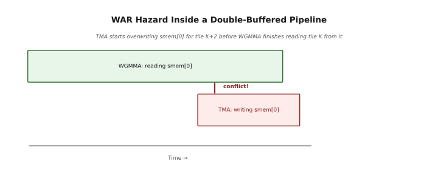
WGMMA is still reading smem[0] when TMA starts overwriting it for the next tile — the overlap between the two bars is the conflict window. §13.2's two-barrier handshake is what closes that window.
13.2 mbarrier.arrive — Signaling Completion Without Waiting¶
mbarrier.arrive decrements the pending thread arrival count of the barrier without blocking the calling thread. It is used to signal "I'm done with my part" without waiting for everyone else.
mbarrier.arrive — The Consumer's Signal to the Producer
══════════════════════════════════════════════════════════════════════
PTX:
mbarrier.arrive.release.shared::cta.b64 _, [mbar_addr];
// Decrements pending thread arrival count by 1.
// Does NOT block. Returns immediately.
// .release ensures all prior reads are visible before the signal.
How it prevents WAR:
─────────────────────────────────────────────────────────────────
Setup: Consumer barrier initialized with thread_count = NUM_CONSUMER_WARPS
Producer WAITS on this barrier before overwriting the buffer.
Consumer warps (running wgmma):
... [reading smem[tile_K]] ... // WGMMA reads data
mbarrier.arrive.release [consumer_bar]; // signal: done reading
// Returns immediately — consumer warp continues other work.
Once ALL consumer warps have arrived:
consumer_bar's thread count reaches 0.
consumer_bar's phase flips.
→ Producer is unblocked (it was waiting on consumer_bar).
Producer thread:
// Wait until consumers are done reading
while (!try_wait [consumer_bar], prod_phase);
prod_phase ^= 1;
// Now safe to issue TMA overwrite
cp.async.bulk.tensor [smem + tile_K], ... [data_bar];
Barrier A (`data_bar`) answers "has the data arrived from TMA?" — the producer signals it via TMA hardware, and the consumer waits on it. Barrier B (`release_bar`) answers "are consumers done reading the buffer?" — consumer warps signal it via `mbarrier.arrive`, and the producer waits on it before its next overwrite.
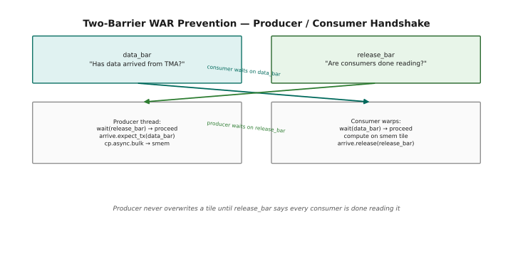
The consumer waits on data_bar before it can compute, and the producer waits on release_bar before it can overwrite the buffer for the next tile — each barrier gates the opposite side, which is exactly what closes the WAR hazard window from §13.1.
13.3 mbarrier.arrive.release — With Memory Ordering¶
The .release suffix on arrive ensures that all memory operations (reads, writes) done by this thread before the arrive are guaranteed to be visible to any thread that subsequently waits on this barrier. This is the correct form for consumer→producer signaling.
mbarrier.arrive vs mbarrier.arrive.release
══════════════════════════════════════════════════════════════════════
mbarrier.arrive (relaxed — no ordering):
Use when: The signal itself carries no data dependency.
Only signals "I've arrived at this point in the program."
Does NOT guarantee that prior stores are visible.
OK for: pure arrival counting with no associated data.
mbarrier.arrive.release (with release semantics):
Use when: The thread has done writes that consumers need to see.
Guarantees: all stores BEFORE this arrive are visible to threads
that subsequently acquire the barrier (e.g., via try_wait.acquire).
Correct for: producer→consumer data handoff, WAR prevention.
Example — when release matters:
─────────────────────────────────────────────────────────────────
// Producer writes to smem, then signals barrier
for (int i = 0; i < N; i++)
smem[i] = compute(i); // writes to shared memory
mbarrier.arrive.release [bar]; // release: smem writes above
// are visible after the acquire
// Consumer waits on barrier, then reads smem
while (!try_wait.acquire [bar], phase);
float val = smem[5]; // guaranteed to see producer's write
If you used mbarrier.arrive (relaxed) instead:
Consumer might see stale smem values even after try_wait returns.
→ Silent data corruption. Use .release whenever you write data
that the consumer will read.
13.4 Destroying a Barrier — mbarrier.inval¶
When you are completely done with a barrier and want to free its shared memory for other use, you must formally invalidate it.
mbarrier.inval — Formal Invalidation
══════════════════════════════════════════════════════════════════════
PTX:
mbarrier.inval.shared::cta.b64 [addr];
What it does:
├── Formally invalidates the mbarrier object
├── Zeroes out the hardware's tracking state for this barrier
├── Frees the 64-bit SMEM slot for other use
└── Converts generic pointer to shared-memory offset internally
When to call it:
├── When the barrier will NEVER be used again in this kernel
├── Before reusing the SMEM space for a different variable
└── At the end of a computation phase
Important: Do NOT call inval while other threads might still
be waiting on the barrier. Always coordinate with __syncthreads()
or a predecessor barrier to ensure all threads are done.
// End-of-kernel cleanup:
if (threadIdx.x == 0) {
uint32_t addr = __cvta_generic_to_shared(&mbar);
asm volatile("mbarrier.inval.shared::cta.b64 [%0];" : : "r"(addr));
}
14 — barrier.cluster — Cross-Block Synchronization¶
__syncthreads() synchronises the threads of one block. Once Chapter 2's
clusters enter the picture, you need something that synchronises across blocks —
and that is a different instruction with a different cost.
§14.1 explains why the old primitive can't be stretched to cover this; §14.2 covers the split arrive/wait form, which lets you do useful work in the gap between announcing that you've arrived and waiting for everyone else.
14.1 Why barrier.cluster Is Needed¶
__syncthreads() synchronizes within a single thread block. It cannot coordinate blocks in different SMs, even if they are in the same cluster. barrier.cluster fills this gap — it synchronizes ALL blocks in a thread block cluster.
barrier.cluster vs __syncthreads — Scope Comparison
══════════════════════════════════════════════════════════════════════
__syncthreads() / bar.sync:
─────────────────────────────────────────────────────────────────
├── Scope: ONE thread block (all threads in the same CTA)
├── Guarantees: all threads in the block have reached this point
├── CANNOT synchronize across different blocks/SMs
└── Available since CUDA 1.0, all architectures
barrier.cluster:
─────────────────────────────────────────────────────────────────
├── Scope: ALL thread blocks in the SAME CLUSTER (Hopper+)
├── Guarantees: all blocks have reached the barrier
├── Also guarantees: DSMEM writes from all blocks are visible
│ to all other blocks in the cluster
└── Required for: TMA multicast, DSMEM-based cross-block algorithms
─── The Key Use Case: TMA Multicast ─────────────────────────────
TMA Multicast delivers one HBM3 fetch to MULTIPLE blocks' SMEM
simultaneously. But there is a timing issue:
Block 0 might start executing before Block 1 has been scheduled.
If Block 0 issues a DSMEM write to Block 1's SMEM before Block 1
is physically running on its SM, the write will CRASH.
barrier.cluster.arrive + barrier.cluster.wait ensures:
All blocks in the cluster are physically present and running
BEFORE any cross-block DSMEM operations occur.
─── barrier.cluster Flow ────────────────────────────────────────
In every block of the cluster:
// Signal that this block has reached the barrier
barrier.cluster.arrive; // non-blocking: block continues!
// Do work that doesn't depend on other blocks' DSMEM
independent_local_work();
// Now actually wait for ALL blocks to have arrived
barrier.cluster.wait; // BLOCKING: stalls until all arrived
// After this: all blocks' DSMEM writes are visible cluster-wide.
14.2 barrier.cluster.arrive and barrier.cluster.wait¶
Note that this is deliberately two instructions rather than one. Splitting arrive from wait gives you a window in which to do independent work while the rest of the cluster catches up.
Two Instructions, One Barrier
══════════════════════════════════════════════════════════════════════
barrier.cluster.arrive:
─────────────────────────────────────────────────────────────────
PTX: barrier.cluster.arrive;
Behavior:
├── This block signals it has REACHED the barrier
├── Does NOT stall. Thread continues executing.
├── Allows the block to do independent work between arrive and wait
└── Analogy: "I've checked in at the meeting room, but I'm still
doing other things before the meeting starts."
What you can do between arrive and wait:
├── Local computation (registers, local SMEM)
├── Issue async copies that don't depend on other blocks' data
└── Anything that does NOT require other blocks' DSMEM to be ready
What you CANNOT do between arrive and wait:
└── Read another block's shared memory via DSMEM (unsafe!)
barrier.cluster.wait:
─────────────────────────────────────────────────────────────────
PTX: barrier.cluster.wait;
Behavior:
├── BLOCKING: stalls this thread until ALL blocks in the cluster
│ have issued barrier.cluster.arrive
├── After returning: ALL blocks' DSMEM writes are visible
│ to ALL other blocks in the cluster
└── This is the safety gate before cross-block reads.
─── Combined Pattern ─────────────────────────────────────────────
// ALL blocks in cluster execute this:
barrier.cluster.arrive; // signal arrival (non-blocking)
do_independent_local_work(); // overlap with waiting
barrier.cluster.wait; // stall until everyone is here
// NOW safe: read any block's SMEM via DSMEM
float* partner_smem = cluster.map_shared_rank(smem, partner_rank);
float val = partner_smem[threadIdx.x]; // safe cross-block read
15 — cp.async.bulk Groups — Commit and Wait¶
A second, lighter-weight completion mechanism, and an alternative to mbarrier
for the cases that don't need its precision.
The model is a queue: you issue some copies, commit_group draws a line under
them (§15.2), and wait_group<N> waits until all but the newest N batches have
landed (§15.3). That "all but N" phrasing is what makes it useful — it's how you
express "keep two loads in flight at all times" in a single instruction.
§15.4 covers the .read variant, which waits for a weaker condition — the
source has been read, not the destination written — and is precisely what you
need for the WAR hazards of §13.
15.1 Grouping Async Copies for Pipeline Control¶
When you issue multiple cp.async.bulk operations, you can group them into batches using commit/wait. This allows you to express "wait for the N most recently committed groups to complete" rather than waiting for every individual copy.
cp.async.bulk Groups — The Mental Model
══════════════════════════════════════════════════════════════════════
Without groups (coarse control):
cp.async.bulk [mbar], tile_A;
cp.async.bulk [mbar], tile_B;
cp.async.bulk [mbar], tile_C;
// All three share one mbarrier → must wait for ALL before using ANY
With groups (fine-grained control):
cp.async.bulk bulk_group tile_A; // uncommitted, in "current group"
cp.async.bulk bulk_group tile_B; // also in "current group"
cp.async.bulk.commit_group; // → these two form Group 0
cp.async.bulk bulk_group tile_C; // in "current group"
cp.async.bulk bulk_group tile_D; // also in "current group"
cp.async.bulk.commit_group; // → these two form Group 1
// Now:
cp.async.bulk.wait_group 1; // wait until AT MOST 1 group pending
// → Group 0 (tile_A, tile_B) is guaranteed complete
// → Group 1 (tile_C, tile_D) may still be in flight
// → Can now safely use tile_A and tile_B
─── Why This Enables Software Pipelining ────────────────────────
Iteration K:
commit_group; // commits copies for tile K → Group 0
Iteration K+1:
commit_group; // commits copies for tile K+1 → Group 1
Iteration K+2:
commit_group; // commits copies for tile K+2 → Group 2
wait_group<1>; // wait until at most 1 group pending
// → Groups 0 AND 1 are complete
// → Group 2 may still be in flight
use tile K data; // Group 0 is definitely done
15.2 cp.async.bulk.commit_group¶
The instruction that draws a line under the copies issued so far and turns them into one countable batch.
cp.async.bulk.commit_group — Batching Copies
══════════════════════════════════════════════════════════════════════
PTX:
cp.async.bulk.commit_group;
What it does:
├── Takes all currently UNCOMMITTED cp.async.bulk operations and
│ groups them into a single named batch (a "group")
├── Any cp.async.bulk issued AFTER this belong to the NEXT group
├── Groups are numbered implicitly from 0 (oldest) to N (newest)
└── The group number is an implicit internal counter
Important:
├── If no cp.async.bulk operations have been issued since the last
│ commit_group, this creates an empty group (harmless)
├── All operations in a committed group are tracked together
└── Groups complete in FIFO order (group 0 before group 1, etc.)
Analogy:
Imagine dropping items onto a conveyor belt, then pressing
a "seal this batch" button. Items before the seal = one shipment.
Items after the seal = next shipment. commit_group is the seal.
15.3 cp.async.bulk.wait_group — Waiting for N Groups¶
The counterpart. Read the N carefully: it is how many groups you are willing
to leave outstanding, not how many to wait for — which is backwards from most
people's first guess.
cp.async.bulk.wait_group<N> — Selective Wait
══════════════════════════════════════════════════════════════════════
PTX:
cp.async.bulk.wait_group N;
Semantics:
"Wait until at most N committed groups are still pending."
Equivalently: wait until all groups EXCEPT the N most recent are done.
Parameter N:
─────────────────────────────────────────────────────────────────
wait_group<0> → wait for ALL committed groups to complete
wait_group<1> → wait until only the 1 most recent group is pending
(the 2nd-most-recent and older are all complete)
wait_group<2> → wait until only the 2 most recent groups are pending
─── Manual Worked Example ───────────────────────────────────────
Groups committed so far: [G0, G1, G2, G3] (G0 oldest, G3 newest)
wait_group<0> → stalls until G0, G1, G2, G3 all complete
wait_group<1> → stalls until G0, G2, G1 complete; G3 may still run
wait_group<2> → stalls until G0, G1 complete; G2, G3 may still run
wait_group<3> → stalls until G0 complete; G1, G2, G3 may still run
─── Pipeline Depth and wait_group ──────────────────────────────
For a 2-stage (double-buffered) pipeline:
Load tile for K+1 into buffer B1 → commit → Group 0
Compute on tile K from buffer B0
wait_group<0> → ensures tile K+1 (Group 0) is ready in B1
Swap buffers (B0 ↔ B1)
Load tile for K+2 into B1 → commit → Group 1
Compute on tile K+1 from B0
wait_group<0> → ensures tile K+2 (Group 1) is ready
...
For a 3-stage (triple-buffered) pipeline:
Load K+1 → Group 0
Load K+2 → Group 1
Compute K
wait_group<1> → Group 0 (K+1) is ready; Group 1 (K+2) may be in flight
Load K+3 → Group 2
Compute K+1
wait_group<1> → Group 1 (K+2) is ready; Group 2 (K+3) may be in flight
...
─── The Acquire Fence ───────────────────────────────────────────
wait_group also enforces an implicit ACQUIRE FENCE on completion.
After it returns, all data written by the completed groups is
visible to the Generic Proxy (thread). You can safely read the data
without an additional fence.
15.4 cp.async.bulk.wait_group.read — For WAR Hazard Prevention¶
A weaker and therefore faster wait. It tells you the copy has finished reading its source, which is all you need before overwriting that source — you don't have to wait for the destination write to land.
cp.async.bulk.wait_group.read — The Read Variant
══════════════════════════════════════════════════════════════════════
PTX:
cp.async.bulk.wait_group.read N;
Purpose: Same as wait_group, BUT also ensures that any pending
reads issued via cp.async.bulk (for read operations) have completed.
When to use:
├── When you are using cp.async.bulk for READ operations
│ (rare: most cp.async.bulk are writes to SMEM)
├── When you need to guarantee that the source memory has been
│ fully read before the producer overwrites it (WAR hazard)
└── In practice: standard wait_group suffices for most use cases.
Use wait_group.read only if your profiling shows ordering issues.
16 — Named Barriers¶
The last primitive, and the one that makes warp specialisation possible.
__syncthreads() is all-or-nothing: every warp in the block waits for every
other. But in a producer/consumer kernel, the warps loading data and the warps
computing on it don't want to rendezvous with each other on every iteration —
that would destroy the overlap you built the pipeline for.
Named barriers let you carve the block into groups that synchronise independently. Chapter 8's warp-specialised kernels rest on this.
16.1 What Are Named Barriers?¶
__syncthreads() is a "whole-block rendezvous" — it makes ALL warps in the block wait for each other. This is often more synchronization than you need. Named barriers (also called split barriers) let you create MULTIPLE independent synchronization points within one block, each involving only a SUBSET of warps.
This enables producer/consumer pipelines within a single block: producer warps load data and signal one barrier; consumer warps wait on that barrier and then compute. Meanwhile, the consumer warps signal a different barrier when they're done reading, allowing the producer to reload.
Named Barriers vs __syncthreads — Capabilities
══════════════════════════════════════════════════════════════════════
__syncthreads() (unnamed, whole-block):
─────────────────────────────────────────────────────────────────
├── ALL warps in the block must participate
├── One synchronization point — all or nothing
├── Simple to use, but forces unnecessary waits
└── PTX: bar.sync 0; (barrier ID 0, implicit all threads)
Named barriers (bar.sync/bar.arrive with ID):
─────────────────────────────────────────────────────────────────
├── SUBSET of warps can participate (specified by thread count)
├── Up to 16 independent named barriers (IDs 0-15) per block
├── Different warps can use different barriers simultaneously
└── PTX: bar.sync a, b; (barrier ID a, expected thread count b)
─── Named Barrier PTX Syntax ─────────────────────────────────────
bar.sync a, b; // Block: "a" warps, reach this, wait for b threads
bar.arrive a, b; // Arrive but do NOT wait (fire-and-forget signal)
bar.red a, b; // Reduction across barrier participants (sum, etc.)
Parameters:
a: Barrier ID (0-15). Different IDs → independent barriers.
b: Expected thread count. Must be a multiple of 32 (warp size).
Example: b=128 means 128 threads (4 warps) participate.
─── Named Barrier Example — Producer/Consumer ────────────────────
__shared__ float smem_ping[1024];
__shared__ float smem_pong[1024];
// Assume: producer warps = 0,1 consumer warps = 2,3,4,5
// producer uses barrier ID 0 (consumer waits on it)
// consumer uses barrier ID 1 (producer waits on it)
if (warp_id < 2) {
// PRODUCER WARPS
load_data_into(smem_ping); // fill ping buffer
bar.arrive 0, 4*32; // signal: ping buffer ready
// (4 consumer warps × 32 threads)
bar.sync 1, 2*32; // wait: consumers done reading pong
load_data_into(smem_pong); // reload pong buffer
...
} else {
// CONSUMER WARPS
bar.sync 0, 4*32; // wait: ping buffer ready
compute_on(smem_ping); // use ping buffer
bar.arrive 1, 2*32; // signal: done reading pong (for prod)
bar.sync 0, 4*32; // wait: pong buffer ready
compute_on(smem_pong);
...
}
17 — Putting It All Together¶
Two complete, runnable programs. The first (§17.1) walks the five-step pipeline from §9 end to end. The second (§17.2) builds the two-barrier handshake from §13 — the pattern that shows up again, at production scale, in Chapter 9.
Both open with a hand-worked trace of the barrier state so you can predict the output before you compile.
17.1 Full Example: Basic mbarrier + TMA Simulation¶
Manual Worked Example Before the Code:
Scenario: Single block, 64 threads, copy 256 floats (1024 bytes) from
global memory to shared memory asynchronously via a simulated
TMA pattern, using mbarrier for synchronization.
Thread count at init: 1 (only producer thread signals arrive)
Transaction bytes: 1024 (256 floats × 4 bytes)
Timeline:
t=0: Thread 0 calls mbarrier.init([mbar], count=1)
pending_threads=1, pending_tx=0, phase=0
t=1: Thread 0 calls mbarrier.arrive.expect_tx([mbar], 1024)
pending_threads=0, pending_tx=1024, phase=0
t=2: Thread 0 issues cp.async.bulk → TMA starts (linked to mbar)
TMA decrements tx count as 128-byte bursts arrive:
1024 → 896 → 768 → ... → 0
t=2 to t=10: ALL threads compute on PREVIOUS tile (latency hiding!)
t=10: TMA delivers last burst → pending_tx = 0
BOTH counts = 0 → barrier fires → phase flips: 0 → 1
t=11: Threads polling try_wait(parity=0):
internal_phase(1) != parity(0) → DONE → waitComplete=1
All threads proceed. phase ^= 1 → local phase = 1.
t=12: Threads read the newly arrived data in SMEM.
═══════════════════════════════════════════════════════
FILE: ex01_mbarrier_basic.cu
COMPILE: nvcc -std=c++17 -arch=sm_90a -O2 ex01_mbarrier_basic.cu -o ex01
(Blackwell: replace sm_90a with sm_100a)
RUN: ./ex01
EXPECT: Barrier pipeline completes, data verified correct.
═══════════════════════════════════════════════════════
// ═══════════════════════════════════════════════════════════════════
// ex01_mbarrier_basic.cu
//
// PURPOSE: Demonstrate the complete mbarrier pipeline with a simulated
// async copy. Uses cp.async (non-bulk) for portability, but shows
// the full mbarrier init/arrive.expect_tx/wait/reuse pattern.
//
// NOTE: This uses cp.async (Ampere-style) for the actual copy but
// wraps it in the mbarrier pattern. In production code on H100,
// replace cp.async with cp.async.bulk.tensor + TMA descriptors.
// The mbarrier semantics are identical.
//
// WHAT THIS DEMONSTRATES:
// 1. mbarrier initialization in shared memory
// 2. arrive.expect_tx: setting expected byte count
// 3. try_wait.parity: non-blocking completion polling
// 4. Phase tracking with local register
// 5. Barrier reuse across multiple iterations
//
// REQUIRES: sm_90a (H100) or sm_100a (Blackwell)
// ═══════════════════════════════════════════════════════════════════
#include <cstdio>
#include <cstdint>
#include <cmath>
#define CHECK_CUDA(call) do { \
cudaError_t _e = (call); \
if (_e != cudaSuccess) { \
fprintf(stderr, "CUDA ERROR %s:%d: %s\n", \
__FILE__, __LINE__, cudaGetErrorString(_e)); \
exit(1); } } while(0)
// Number of floats per tile (must fit in SMEM)
static constexpr int TILE_SIZE = 256; // elements
static constexpr int TILE_BYTES = TILE_SIZE * sizeof(float); // 1024 bytes
// ─────────────────────────────────────────────────────────────────
// KERNEL: mbarrier_pipeline_kernel
//
// Iterates over K tiles. For each tile:
// Producer (thread 0): sets up mbarrier, issues cp.async copy
// All threads: poll mbarrier until copy is complete
// All threads: verify the loaded data is correct
// ─────────────────────────────────────────────────────────────────
__global__ void mbarrier_pipeline_kernel(
const float* __restrict__ gmem_input, // source: K tiles in global memory
uint32_t* __restrict__ pass_count, // output: number of passing checks
int K) // number of tiles to process
{
// ── Shared memory layout ─────────────────────────────────────
// mbarrier object: MUST be 8-byte aligned (use __align__)
// smem tile: the destination for our async copies
__shared__ __align__(8) uint64_t mbar;
__shared__ float smem[TILE_SIZE];
int tid = threadIdx.x;
int num_threads = blockDim.x;
// ── STEP 1: Initialize mbarrier (thread 0 only) ───────────────
// Expected thread arrival count = 1.
// Only the producer thread (thread 0) will call arrive.expect_tx,
// which decrements the thread count AND sets the tx byte count.
// So the barrier completes when:
// (a) thread 0 has called arrive.expect_tx [thread count 1→0]
// (b) the async copy delivers TILE_BYTES bytes [tx count→0]
if (tid == 0) {
uint32_t mbar_addr = __cvta_generic_to_shared(&mbar);
asm volatile(
"mbarrier.init.shared::cta.b64 [%0], %1;"
: : "r"(mbar_addr), "r"(1u) // 1 expected thread arrival
);
}
// CRITICAL: All threads must wait for init to complete before
// anyone tries to use the barrier.
__syncthreads();
// ── Phase tracking — LOCAL REGISTER (not SMEM!) ────────────────
// Each thread keeps its own copy of the current phase.
// They all start at 0 and XOR to 1 after each barrier completion.
int phase = 0;
// ── Pipeline loop over K tiles ────────────────────────────────
for (int k = 0; k < K; k++) {
// STEP 2 & 3: Producer thread sets up barrier and issues copy
if (tid == 0) {
uint32_t mbar_addr = __cvta_generic_to_shared(&mbar);
// arrive.expect_tx: two effects in one instruction:
// 1. Decrements thread arrival count: 1 → 0
// 2. Adds TILE_BYTES to expected transaction count: 0 → 1024
// Also has .release semantics (ordering for prior stores).
asm volatile(
"mbarrier.arrive.expect_tx.release.shared::cta.b64 _, [%0], %1;"
: : "r"(mbar_addr), "r"((uint32_t)TILE_BYTES)
);
// Now issue the actual async copy.
// In production: replace with cp.async.bulk.tensor + TMA descriptor.
// Here: use cp.async (Ampere-style) which also supports mbarrier.
const float* src = gmem_input + k * TILE_SIZE;
// cp.async loads from global to shared memory, 16 bytes at a time.
// We link it to the mbarrier so hardware decrements tx count.
// (Using a loop of cp.async to simulate bulk behavior.)
// NOTE: In sm_90a, cp.async.bulk.tensor is the preferred way.
// This loop uses cp.async for pedagogical clarity:
for (int i = 0; i < TILE_BYTES; i += 16) {
uint32_t smem_off = __cvta_generic_to_shared(smem) + i;
uint64_t gmem_addr = reinterpret_cast<uint64_t>(
reinterpret_cast<const char*>(src) + i);
asm volatile(
"cp.async.cg.shared.global.mbarrier::complete_tx::bytes"
" [%0], [%1], 16, [%2];"
: : "r"(smem_off), "l"(gmem_addr), "r"(mbar_addr)
);
}
asm volatile("cp.async.commit_group;");
}
// STEP 4: All threads do independent work while copy runs.
// In a real kernel: compute on previous tile's data here.
// For this demo: just count to simulate useful work.
volatile int dummy = tid * k; // prevent optimizer from removing
(void)dummy;
// STEP 5: Poll mbarrier until the copy completes.
// mbarrier.try_wait.parity:
// Returns true when internal_phase != phaseParity
// i.e., when the barrier has flipped past the expected phase.
{
uint32_t mbar_addr = __cvta_generic_to_shared(&mbar);
uint32_t done = 0;
while (!done) {
asm volatile(
"{\n\t"
" .reg .pred p;\n\t"
// try_wait.parity.acquire: non-blocking check WITH acquire fence.
// Returns p=true when phase has flipped (copy complete).
" mbarrier.try_wait.parity.acquire.shared::cta.b64"
" p, [%1], %2;\n\t"
" selp.u32 %0, 1, 0, p;\n\t"
"}\n\t"
: "=r"(done)
: "r"(mbar_addr), "r"((uint32_t)phase)
);
}
}
// After try_wait returns, the acquire fence guarantees that all
// data written by the async copy is visible to this thread.
// phase has NOT yet been updated — do that after using the data.
// STEP 6: Verify the loaded data is correct.
// Expected: smem[i] = (float)(k * TILE_SIZE + i)
int local_passes = 0;
for (int i = tid; i < TILE_SIZE; i += num_threads) {
float expected = (float)(k * TILE_SIZE + i);
if (fabsf(smem[i] - expected) < 1e-4f) local_passes++;
}
// Accumulate to global (atomic to avoid races across threads)
atomicAdd(pass_count, (uint32_t)local_passes);
// STEP 7: Flip phase for next iteration (barrier reuse).
// The barrier's thread arrival count automatically reset to 1
// when the phase flipped. No need to re-init!
phase ^= 1;
// Sync all threads before next iteration (so producer doesn't
// call arrive.expect_tx before all threads are done reading SMEM)
__syncthreads();
}
}
int main() {
printf("╔══════════════════════════════════════════════════════════╗\n");
printf("║ ex01: mbarrier Pipeline — Init/Arrive/Wait/Reuse ║\n");
printf("╚══════════════════════════════════════════════════════════╝\n\n");
// Check GPU supports mbarrier (requires sm_90a / Hopper)
cudaDeviceProp prop;
CHECK_CUDA(cudaGetDeviceProperties(&prop, 0));
printf("GPU: %s (SM %d.%d)\n", prop.name, prop.major, prop.minor);
if (prop.major < 9) {
fprintf(stderr, "ERROR: mbarrier requires Hopper (SM 9.0+). "
"Your GPU is SM %d.%d\n", prop.major, prop.minor);
return 1;
}
const int K = 4; // number of tiles to process
const int TOTAL = K * TILE_SIZE;
const int BLOCK_SIZE = 64;
// Build host input: tile k has values k*256, k*256+1, ..., k*256+255
float h_input[TOTAL];
for (int i = 0; i < TOTAL; i++) h_input[i] = (float)i;
float *d_input;
uint32_t *d_passes, h_passes = 0;
CHECK_CUDA(cudaMalloc(&d_input, TOTAL * sizeof(float)));
CHECK_CUDA(cudaMalloc(&d_passes, sizeof(uint32_t)));
CHECK_CUDA(cudaMemcpy(d_input, h_input, TOTAL * sizeof(float),
cudaMemcpyHostToDevice));
CHECK_CUDA(cudaMemset(d_passes, 0, sizeof(uint32_t)));
printf("Config: K=%d tiles, %d elements/tile, %d threads/block\n\n",
K, TILE_SIZE, BLOCK_SIZE);
mbarrier_pipeline_kernel<<<1, BLOCK_SIZE>>>(d_input, d_passes, K);
CHECK_CUDA(cudaGetLastError());
CHECK_CUDA(cudaDeviceSynchronize());
CHECK_CUDA(cudaMemcpy(&h_passes, d_passes, sizeof(uint32_t),
cudaMemcpyDeviceToHost));
uint32_t expected_passes = (uint32_t)K * TILE_SIZE;
printf("Element checks: %u / %u passed\n", h_passes, expected_passes);
bool all_pass = (h_passes == expected_passes);
printf("\n╔══════════════════════════════════════════════════════════╗\n");
printf("║ %-56s ║\n", all_pass
? "✓ ALL PASS — mbarrier pipeline working correctly!"
: "✗ FAILURES DETECTED");
printf("╚══════════════════════════════════════════════════════════╝\n");
CHECK_CUDA(cudaFree(d_input));
CHECK_CUDA(cudaFree(d_passes));
return all_pass ? 0 : 1;
}
Sample Output:
╔══════════════════════════════════════════════════════════╗
║ ex01: mbarrier Pipeline — Init/Arrive/Wait/Reuse ║
╚══════════════════════════════════════════════════════════╝
GPU: NVIDIA H100 80GB HBM3 (SM 9.0)
Config: K=4 tiles, 256 elements/tile, 64 threads/block
Element checks: 1024 / 1024 passed
╔══════════════════════════════════════════════════════════╗
║ ✓ ALL PASS — mbarrier pipeline working correctly! ║
╚══════════════════════════════════════════════════════════╝
GPU: and the SM pair come from cudaGetDeviceProperties and vary with the hardware the binary runs on — any Hopper or newer card prints SM 9.0 or higher; the rest of the output is deterministic. The kernel runs K=4 iterations of the init → arrive.expect_tx → poll-try_wait.parity → verify → flip-phase pipeline over one BLOCK_SIZE=64 block, so every one of the K × TILE_SIZE = 4 × 256 = 1024 elements loaded into smem is checked against (float)(k * TILE_SIZE + i), and all 1024 checks pass since the host seeds h_input[i] = (float)i to match exactly. One cosmetic note: the closing box's right edge lands two columns short of the border above it. That's not a typo in this guide — it's the real behavior of printf("║ %-56s ║\n", ...) on the actual program: the field width 56 is a byte count, and the string being padded contains two multi-byte UTF-8 glyphs (✓ and the em dash —, 3 bytes each instead of 1), so the padding comes up short of the visual width the border uses. The ✗ FAILURES DETECTED variant (only one multi-byte glyph) happens to land flush by comparison.
17.2 Full Example: WAR Hazard Prevention with Two Barriers¶
Manual Worked Example:
Double-buffer pipeline with WAR prevention.
smem[0] = buffer A, smem[1] = buffer B. Alternating tiles.
Tile K=0:
data_bar: initialized, expect_tx=1024
Producer: arrive.expect_tx(data_bar, 1024), cp.async → buf A
release_bar: initialized with thread_count = blockDim.x (all consumers)
Consumers: wait(data_bar, phase=0) → data arrives → compute buf A
Consumers: arrive.release(release_bar) each → count hits 0 → release_bar fires
Tile K=1:
Producer: wait(release_bar, phase=0) → all consumers done reading buf A
→ Safe to overwrite buf A!
Producer: arrive.expect_tx(data_bar, 1024), cp.async → buf A (K=2's data)
Consumers: compute buf B (already loaded from K=1 fetch, overlapping!)
═══════════════════════════════════════════════════════
FILE: ex02_war_prevention.cu
COMPILE: nvcc -std=c++17 -arch=sm_90a -O2 ex02_war_prevention.cu -o ex02
RUN: ./ex02
EXPECT: All tiles computed correctly, no WAR corruptions detected.
═══════════════════════════════════════════════════════
// ═══════════════════════════════════════════════════════════════════
// ex02_war_prevention.cu
//
// PURPOSE: Demonstrate WAR hazard prevention using two mbarriers.
//
// data_bar: "Has the data arrived from the async copy?"
// Producer signals (via TMA hardware). Consumers wait.
//
// release_bar: "Are consumers done reading the buffer?"
// Consumers signal (via mbarrier.arrive).
// Producer waits before overwriting the buffer.
//
// PIPELINE:
// Producer thread: copies tile K into the current buffer
// Consumer threads: compute on the current buffer
// Neither overwrites until the other is done.
//
// REQUIRES: sm_90a (H100) or sm_100a (Blackwell)
// ═══════════════════════════════════════════════════════════════════
#include <cstdio>
#include <cstdint>
#include <cmath>
#define CHECK_CUDA(call) do { \
cudaError_t _e = (call); \
if (_e != cudaSuccess) { \
fprintf(stderr,"CUDA ERROR %s:%d: %s\n", \
__FILE__,__LINE__,cudaGetErrorString(_e)); exit(1); } } while(0)
static constexpr int TILE = 128; // elements per tile
static constexpr int TBYTES = TILE * sizeof(float);
static constexpr int K_TILES = 8; // total tiles
__global__ void war_prevention_kernel(
const float* __restrict__ src,
float* __restrict__ dst,
int K)
{
// ── Shared memory ─────────────────────────────────────────────
// Two barriers: data_bar (copy→compute handoff) and
// release_bar (compute→copy handoff, WAR prevention)
__shared__ __align__(8) uint64_t data_bar;
__shared__ __align__(8) uint64_t release_bar;
__shared__ float smem[TILE]; // single buffer (simplified)
int tid = threadIdx.x;
int nthreads = blockDim.x;
uint32_t data_addr = __cvta_generic_to_shared(&data_bar);
uint32_t release_addr = __cvta_generic_to_shared(&release_bar);
// ── INIT (thread 0 only, then syncthreads) ────────────────────
if (tid == 0) {
// data_bar: 1 producer thread will call arrive.expect_tx
asm volatile("mbarrier.init.shared::cta.b64 [%0], 1;" : : "r"(data_addr));
// release_bar: ALL consumer threads will call arrive when done reading
asm volatile("mbarrier.init.shared::cta.b64 [%0], %1;"
: : "r"(release_addr), "r"(nthreads));
}
__syncthreads();
int data_phase = 0; // phase for data_bar
int release_phase = 0; // phase for release_bar
for (int k = 0; k < K; k++) {
// ── PRODUCER: wait for consumers to release (WAR prevention) ─
// On first iteration: release_bar was just initialized but no one
// has arrived yet, so we pre-arrive all threads to "open" it.
if (k == 0) {
// Prime release_bar: all threads arrive so it fires immediately
// (no previous computation, so the buffer is "free" to write)
asm volatile(
"mbarrier.arrive.release.shared::cta.b64 _, [%0];"
: : "r"(release_addr)
);
}
// Producer thread waits on release_bar before overwriting SMEM
if (tid == 0) {
// Spin until consumers signal "buffer is free to overwrite"
uint32_t ready = 0;
while (!ready) {
asm volatile(
"{\n\t"
" .reg .pred p;\n\t"
" mbarrier.try_wait.parity.acquire.shared::cta.b64"
" p, [%1], %2;\n\t"
" selp.u32 %0, 1, 0, p;\n\t"
"}\n\t"
: "=r"(ready) : "r"(release_addr), "r"((uint32_t)release_phase)
);
}
release_phase ^= 1;
// Now safe to load next tile into SMEM
asm volatile(
"mbarrier.arrive.expect_tx.release.shared::cta.b64 _, [%0], %1;"
: : "r"(data_addr), "r"((uint32_t)TBYTES)
);
const float* tile_src = src + k * TILE;
for (int i = 0; i < TBYTES; i += 16) {
uint32_t s = __cvta_generic_to_shared(smem) + i;
uint64_t g = reinterpret_cast<uint64_t>(
reinterpret_cast<const char*>(tile_src) + i);
asm volatile(
"cp.async.cg.shared.global.mbarrier::complete_tx::bytes"
" [%0], [%1], 16, [%2];"
: : "r"(s), "l"(g), "r"(data_addr)
);
}
asm volatile("cp.async.commit_group;");
}
// ── CONSUMERS: wait for data, compute, then signal release ─────
// All threads wait for data_bar (copy to complete)
{
uint32_t ready = 0;
while (!ready) {
asm volatile(
"{\n\t"
" .reg .pred p;\n\t"
" mbarrier.try_wait.parity.acquire.shared::cta.b64"
" p, [%1], %2;\n\t"
" selp.u32 %0, 1, 0, p;\n\t"
"}\n\t"
: "=r"(ready) : "r"(data_addr), "r"((uint32_t)data_phase)
);
}
data_phase ^= 1;
}
// Compute: multiply each element by 2.0 and write to dst
for (int i = tid; i < TILE; i += nthreads) {
float val = smem[i];
dst[k * TILE + i] = val * 2.0f;
}
// All threads signal release_bar: "done reading this tile"
// .release ensures the writes to dst are visible before the signal.
asm volatile(
"mbarrier.arrive.release.shared::cta.b64 _, [%0];"
: : "r"(release_addr)
);
// Sync before next iteration so producer doesn't race ahead
__syncthreads();
}
// Cleanup (optional but good practice)
if (tid == 0) {
asm volatile("mbarrier.inval.shared::cta.b64 [%0];" : : "r"(data_addr));
asm volatile("mbarrier.inval.shared::cta.b64 [%0];" : : "r"(release_addr));
}
}
int main() {
printf("╔══════════════════════════════════════════════════════════╗\n");
printf("║ ex02: WAR Prevention — Two-Barrier Pipeline ║\n");
printf("╚══════════════════════════════════════════════════════════╝\n\n");
cudaDeviceProp prop;
CHECK_CUDA(cudaGetDeviceProperties(&prop, 0));
printf("GPU: %s (SM %d.%d)\n", prop.name, prop.major, prop.minor);
if (prop.major < 9) {
fprintf(stderr, "ERROR: requires Hopper (SM 9.0+)\n"); return 1;
}
const int N = K_TILES * TILE;
float h_in[N], h_out[N], h_exp[N];
for (int i = 0; i < N; i++) { h_in[i] = (float)i; h_exp[i] = i * 2.0f; }
float *d_in, *d_out;
CHECK_CUDA(cudaMalloc(&d_in, N * sizeof(float)));
CHECK_CUDA(cudaMalloc(&d_out, N * sizeof(float)));
CHECK_CUDA(cudaMemcpy(d_in, h_in, N * sizeof(float), cudaMemcpyHostToDevice));
CHECK_CUDA(cudaMemset(d_out, 0, N * sizeof(float)));
war_prevention_kernel<<<1, TILE>>>(d_in, d_out, K_TILES);
CHECK_CUDA(cudaGetLastError());
CHECK_CUDA(cudaDeviceSynchronize());
CHECK_CUDA(cudaMemcpy(h_out, d_out, N * sizeof(float), cudaMemcpyDeviceToHost));
int errors = 0;
for (int i = 0; i < N; i++)
if (fabsf(h_out[i] - h_exp[i]) > 1e-4f) errors++;
printf("Config: %d tiles × %d elements = %d total\n", K_TILES, TILE, N);
printf("Element errors: %d / %d\n", errors, N);
printf("Sample: in=%.0f → out=%.0f (expected %.0f)\n",
h_in[7], h_out[7], h_exp[7]);
printf("\n╔══════════════════════════════════════════════════════════╗\n");
printf("║ %-56s ║\n", errors == 0
? "✓ ALL PASS — WAR hazard correctly prevented!"
: "✗ FAILURES — WAR hazard not correctly handled");
printf("╚══════════════════════════════════════════════════════════╝\n");
CHECK_CUDA(cudaFree(d_in)); CHECK_CUDA(cudaFree(d_out));
return (errors == 0) ? 0 : 1;
}
Sample Output:
╔══════════════════════════════════════════════════════════╗
║ ex02: WAR Prevention — Two-Barrier Pipeline ║
╚══════════════════════════════════════════════════════════╝
GPU: NVIDIA H100 80GB HBM3 (SM 9.0)
Config: 8 tiles × 128 elements = 1024 total
Element errors: 0 / 1024
Sample: in=7 → out=14 (expected 14)
╔══════════════════════════════════════════════════════════╗
║ ✓ ALL PASS — WAR hazard correctly prevented! ║
╚══════════════════════════════════════════════════════════╝
GPU: again varies with the card the binary runs on; everything else is deterministic. The host seeds h_in[i] = (float)i and h_exp[i] = i * 2.0f, and the kernel's compute step writes dst[k*TILE+i] = smem[i] * 2.0f after data_bar confirms the tile has arrived — so all K_TILES × TILE = 8 × 128 = 1024 elements match and errors stays 0. The k == 0 priming arrive.release on release_bar is what lets the very first tile's producer proceed immediately, since otherwise it would spin forever waiting on consumer signals that haven't happened yet; from k == 1 onward the producer genuinely blocks on release_bar until the consumers finish reading the buffer it's about to overwrite — the WAR hazard the two-barrier design exists to prevent. The sample index chosen for the in=/out= line is i = 7: in=7 → out=14. As in the previous example, the closing box's right edge runs two columns short of the border above it, for the same reason: the PASS string carries the same two 3-byte UTF-8 glyphs (✓, —) against the byte-counted %-56s field, so the padding comes up two bytes short of the visual width the border uses — regardless of how much slack is left in the 56-byte field itself.
18 — Quick Reference¶
The chapter as reference cards. The two pattern blocks at the end are the ones worth keeping open in another window the first few times you write a pipeline of your own.
mbarrier Instruction Reference¶
Every mbarrier instruction in one table, with what each one does to the phase
and the transaction count.
Instruction Purpose
──────────────────────────────────────────────────────────────────────────
mbarrier.init.shared::cta.b64 [addr], count Create barrier, set thread count
mbarrier.arrive.expect_tx.release...b64 _, [a], tx Signal arrival + set tx bytes
mbarrier.arrive.release.shared::cta.b64 _, [addr] Signal arrival (no tx bytes)
mbarrier.try_wait.parity.acquire...b64 p,[a], par Non-blocking poll (may suspend)
mbarrier.test_wait.parity.shared::cta.b64 p,[a],par Non-blocking poll (never suspends)
mbarrier.inval.shared::cta.b64 [addr] Invalidate/destroy barrier
mbarrier.arrive_drop.release...b64 _, [addr] Arrive + permanently drop count
Phase and Transaction Count Rules¶
Section 10 condensed. When a kernel hangs, the bug is almost always one of these rules.
Rule Notes
──────────────────────────────────────────────────────────────────────────
Phase stored in REGISTERS not SMEM int phase = 0; (per thread)
Phase toggles with phase ^= 1 After each barrier completion
Thread count resets automatically On each phase flip (to init value)
tx_count MUST equal actual bytes copied Off by one → deadlock or early fire
arrive.expect_tx decrements thread count AND adds tx bytes (two effects!)
Multiple expect_tx calls ADD their bytes [addr, 512] + [addr, 256] → 768 total
Barrier completes when BOTH counts = 0 Thread arrivals AND tx bytes
Fence and Proxy Reference¶
Which fence to reach for, given who is producing and who is consuming.
Fence Type PTX When to Use
──────────────────────────────────────────────────────────────────────────
Release (producer) fence.release.cta After writing, before signal
Acquire (consumer) fence.acquire.cta After signal, before reading
Cross-proxy fence.proxy.async Generic writes before Async reads
try_wait built-in acquire try_wait.parity.acquire Use this; avoids separate fence
Synchronization Primitive Comparison¶
All the primitives in this chapter side by side — scope, cost, and what each one is actually for.
Primitive Scope Blocking? Counts Use Case
──────────────────────────────────────────────────────────────────────────
__syncthreads() CTA Yes Threads Simple intra-block sync
mbarrier + try_wait CTA/Cluster Optional Threads+Bytes Async data pipeline (TMA)
barrier.cluster Cluster Yes Blocks Cross-block DSMEM safety
Named barrier Warp subset Yes Threads Producer/consumer within block
cp.async.bulk.wait_group CTA Yes Groups Bulk copy batch control
The Producer/Consumer mbarrier Pattern¶
The canonical loop. Copy this rather than reconstructing it from memory.
INIT (once):
[thread 0] mbarrier.init [mbar], 1
__syncthreads()
int phase = 0; // REGISTER, not SMEM
EACH TILE:
[thread 0] mbarrier.arrive.expect_tx.release [mbar], TILE_BYTES
[thread 0] cp.async.bulk.tensor ... [mbar] // links TMA to mbar
... do independent work (latency hiding) ...
[all] loop: try_wait.parity.acquire [mbar], phase → until true
[all] use the data
[all] phase ^= 1 // toggle for next iteration
__syncthreads()
→ repeat (no re-init needed: barrier auto-resets thread count!)
cp.async.bulk Group Pattern¶
The §15 equivalent, for pipelines that don't need the full precision of
mbarrier.
// Issue copies (uncommitted):
cp.async.bulk ... ; // tile K+1
cp.async.bulk ... ; // tile K+1 part 2
// Commit into a group:
cp.async.bulk.commit_group; // → Group N
// Wait for older groups (pipeline control):
cp.async.bulk.wait_group 1; // all groups except the 1 most recent are done
// → Groups 0..N-1 are complete; Group N may still be in flight
Next — Chapter 4: cuTensorMap, TMA & Swizzling
Chapter 3 gave you the synchronisation. Chapter 4 gives you the copy — or rather its setup: the TMA descriptor, all twelve parameters of
cuTensorMapEncodeTiled(), the dimension-ordering and stride-unit rules that break most first attempts, and swizzling to keep the arriving tile free of bank conflicts.